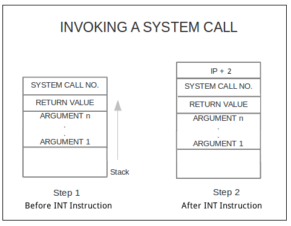
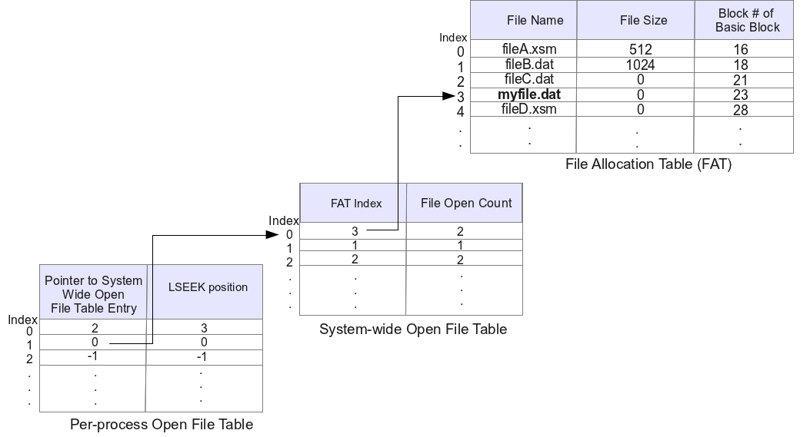

Using the Roadmap
This roadmap is divided into stages. Each stage is to be done in the sequential order. Incrementally you will build XOS according to its specification. Links are provided throughout the document for further reference. There are two kinds of links, important links and informative links. You must visit the Important links the read the immediate section to which the link points to, in order to proceed with the roadmap. Informative links may be clicked if you want more information at a particular point. However this information may not be necessary at that point. You can proceed with the roadmap without visiting these links also.
Stage 1: Setting up the System
Follow the instructions in the setting up section of the usage documentation to setup the system. This roadmap assumes that the entire package is extracted to $HOME/myxos. If the setting up of the system is done correctly the following directories will be created.
- $HOME/myxos/apl
This directory contains the APL (Application Programmers Language) compiler required to compile user programs to XSM machine instructions. Try out APL compiler using the instructions given here.
- $HOME/myxos/apl/samples - Contains sample APL programs for your reference.
- $HOME/myxos/apl/apl_progs - This is an empty directory. The user programs that you write in APL must be saved in this directory.
- $HOME/myxos/spl
This directory contains the SPL (System Programmers Language) Compiler required to compile system programs (i.e. operating system routines) to XSM machine instructions. Instructions on how to use SPL compiler is given here.
- $HOME/myxos/spl/samples - Contains sample SPL programs for your reference.
- $HOME/myxos/spl/spl_progs - This directory is an empty directory. The operating system routines that you code using SPL is to be saved here.
- $HOME/myxos/xfs-interface
This directory contains an interface through which files from your UNIX machine can be loaded into the File System of XSM (XFS or eXperimental File System). The interface also provides options for formatting the disk, listing the files loaded into the disk, removing files from the disk, copying continuous blocks from the disk to a UNIX file and displaying a file in the XFS disk. Usage instructions and examples can be found here.
- $HOME/myxos/xsm
This directory contains the machine simulator (XSM or eXperimental String Machine). Usage instructions and examples can be found here.
- $HOME/myxos/doc
This directory contains the complete specification for XOS (eXperimental Operating System), XSM (eXperimental String Machine), XFS (eXperimental File System), APL (Application Programmers Language) and SPL(System Programmers Language) and Usage Documentation
Assignment
Read and understand the Filesystem (XFS) Specification.
Stage 2: Understanding the Filesystem
eXperimental Filesystem (XFS) is a simulated file system. A UNIX file named "disk.xfs" simulates a hard disk for the machine simulator (XSM). Building XOS begins with understanding the underlying Filesystem (XFS) and its interface. In this stage, you will create an UNIX file and load it to the XFS disk using the XFS-Interface
- Run the XFS Interface
cd $HOME/myxos/xfs-interface
./xfs-interface
This will take you to the xfs-interface prompt.
- Start by formatting the disk in the XFS interface using fdisk command. Type the following commands in the xfs-interface prompt
You will be back in the UNIX shell and a file named disk.xfs is created in the location $HOME/myxos/xfs-interface/. This UNIX file simulates the hard disk for the machine simulator. The disk is formatted as XFS or eXperimental File System. See XFS Specification
-
The Disk Free List in XFS is a data structure which keeps track of used and unused blocks in the disk. An unused block is indicated by 0 and a used block is indicated by 1. Check the contents of the Disk Free List after formatting the disk. Use the df command to view the Disk Free List (Disk Free List is stored in disk block number 20). The output will be as follows:
0 - 1
1 - 1
2 - 1
3 - 1
4 - 1
5 - 1
6 - 1
7 - 1
8 - 1
9 - 1
10 - 1
11 - 1
12 - 1
13 - 1
14 - 1
15 - 1
16 - 1
17 - 1
18 - 1
19 - 1
20 - 1
21 - 1
22 - 1
23 - 1
24 - 0
25 - 0
.
.
No of Free Blocks = 488
Total No of Blocks = 512
The first 24 blocks (blocks 0 to 23) are reserved for disk structures, OS routines and INIT program. See Disk Organization. Hence it is marked as 1 (used) and the remaining entries for blocks 24 to 511 are 0 (unused).
.
Create a file in your UNIX machine with sample data.
A sample data file is given below
There is a place where the sidewalk ends
And before the street begins,
And there the grass grows soft and white,
And there the sun burns crimson bright,
And there the moon-bird rests from his flight
To cool in the peppermint wind.
Save the file as $HOME/myxos/sample.dat
-
Load this data file ($HOME/myxos/sample.dat) to the XFS disk from your UNIX machine. This can be done by the following commands
cd $HOME/myxos/xfs-interface
./xfs-interface
This will take you to the xfs-interface prompt. Type the following commands in the xfs-interface prompt.
# load --data $HOME/myxos/sample.dat
This will load the file to the XFS disk. A FAT entry will be created for this file. FAT or File Allocation Table contains information such as the file name, file size and the block number of basic block. The basic block corresponding to a file will contain locations of the file blocks. Read about XFS (eXperimental File System) before proceeding in the roadmap.
- Find out the FAT entry corresponding to the loaded file. Use the copy command to copy FAT entries (FAT is stored in disk block number 19) to a UNIX file (say $HOME/myxos/fat_block.txt).
# copy 19 19 $HOME/myxos/fat_block.txt
# exit
- Check the FAT entry by viewing the fat_block.txt file from UNIX machine and find the block number of basic block of the loaded data file. Example of first three lines of fat_block.txt indicating the filename, file size and basic block for this loaded file.
sample.dat
512
24
-
Get the basic block number (24 in the above example). Copy the basic block of the file using xfs-interface to a UNIX file (say $HOME/myxos/basic_block.txt) using copy command, to get the data blocks used by this file. Invoke the XFS interface and use the following command.
# copy 24 24 $HOME/myxos/basic_block.txt
(NOTE: In this example block number 24 is the basic block of the loaded file)
The first few lines of the file $HOME/myxos/basic_block.txt is shown below.
25
-1
-1
.
.
This indicates that the only data block of this file is block number 25. Remaining -1 entries, indicates that the remaining entries are invalid. There is only one data block for this file at block number 25.
-
Now check the contents of the disk free list. 2 more entries will be marked as used. One is the basic block for this file (block number 24) and the other will be data block for the file (block number 25). (See Files in XFS) The contents of this disk free list will be as follows
0 - 1
1 - 1
2 - 1
3 - 1
4 - 1
5 - 1
6 - 1
7 - 1
8 - 1
9 - 1
10 - 1
11 - 1
12 - 1
13 - 1
14 - 1
15 - 1
16 - 1
17 - 1
18 - 1
19 - 1
20 - 1
21 - 1
22 - 1
23 - 1
24 - 1
25 - 1
26 - 0
27 - 0
28 - 0
.
.
No of Free Blocks = 486
Total no of Blocks = 512
- Copy the data blocks from the XFS disk and display it as a UNIX file $HOME/myxos/data.txt.
# copy 25 25 $HOME/myxos/data.txt
You will get back the contents of the file $HOME/myxos/sample.txt in $HOME/myxos/data.txt. However in $HOME/myxos/data.txt, each word is displayed in a line. A word in XFS is 16 characters long. Sample data.txt file is shown below.
There is a plac
e where the sid
ewalk ends
And before the
street begins,
And there the g
rass grows soft
and white,
And there the s
un burns crimso
n bright,
And there the m
oon-bird rests
from his flight
To cool in the
peppermint wind
Assignment
Read and understand the Machine(XSM) Specification.
Stage 3: Starting the machine
When the XSM machine is started up, the ROM Code is executed. ROM Code resides in page 0 of the memory. It is hard coded into the machine i.e the ROM code at physical address 0 (to 511) is "already there" when machine starts up. The ROM code is called the "bootstrap" loader in OS literature. ROM code does the following operations :
- Loads block 0 of disk to page 1 of memory (physical address 512).
- After loading the block to memory, it sets IP (Instruction Pointer) to 512 so that the next instruction to be executed is fetched from location 512 (page 1 in memory starts from location 512).
So if you write a program in SPL, compile it using SPL compiler and load the compiled code to block 0 of disk using XFS Interface, your program will be executed by the machine. This program which is loaded to block 0 of disk is supposed to be the OS Startup Code. As described above, this OS Startup Code is loaded from disk block 0 to memory page 1 by the ROM Code on machine startup. (WARNING:The following links are for more information. Don't get lost in these links. If you don't understand, come back and proceed with the roadmap, Memory Organization, Disk Organization).
The OS designer must design and program the "OS Startup Code", compile it using the SPL compiler to generate executable program and copy this program to block 0 of the disk (using xfs interface). Once that is done, this code is loaded into page 1 of memory during boot up by the ROM code. Now this OS Startup code will start executing.
In this stage, we will write a system program to print odd numbers from 1 to n and run it as the OS Startup Code in the machine. The steps to do this are explained in detail below.
Create the program to print odd numbers from 1 to n using SPL. (SPL Specification need not be read now. It is given in SPL Documentation ) See examples of SPL programs in $HOME/myxos/spl/samples. NOTE: It is advised that the system programmer use only the Kernel registers S0 - S15 while writing SPL programs as Program registers R0 - R7 are used by user programs.
SPL Code to print odd numbers from 1 to n (taken as input)
alias counter S0;
alias n S1;
print "Enter n:";
read n;
counter = 0;
while(counter <= n) do
if(counter%2 != 0) then
print counter;
endif;
counter = counter + 1;
endwhile;
An SPL program uses the system registers directly instead of variables. For convenience, you can alias the registers with appropriate identifiers. See aliasing in SPL. In the above program S0 is aliased as counter and S1 is aliased as n. The value of n or S1 is taken as input from the user.
- Save this file as $HOME/myxos/spl/spl_progs/oddnos.spl. Compile this SPL program using the commands
cd $HOME/myxos/spl
./spl --os $HOME/myxos/spl/spl_progs/oddnos.spl
- Load the file generated by the SPL compiler ( $HOME/myxos/spl/spl_progs/os_startup.xsm ) as the OS startup code to disk.xfs using the XFS Interface. Invoke the XFS interface and use the following command to load the OS Startup Code
# load --os $HOME/myxos/spl/spl_progs/os_startup.xsm
# exit
Note that the --os option loads the file to Block 0 of the XFS disk
- Run the machine using the command
The machine will halt after printing all odd numbers from 1 to n
Enter n:
10
1
3
5
7
9
Machine is halting
You may also write a few SPL programs on your own and run it on the machine to get familiarized with SPL syntax. Try using the instructions like breakpoint which translates to BRKP machine instruction. This instruction is useful for debugging. Refer XSM Debugger
Assignment
Read and understand the Runtime environment .
Stage 4: Running a user program
User programs or application programs are programmed using APL or Application Programmer's Language. In stage 3, you wrote a system program and executed it. In this stage you will write a user program. (APL Specification need not be read now. It is given in APL Documentation )
A user program is different from a system program. It is to be noted that a system program is executed in kernel mode (See Privilege modes). The machine starts its execution in kernel mode. In kernel mode both privileged and unprivileged instructions can be executed. All memory addresses are physical addresses in kernel mode .
A user program should be run in user mode. In user mode only unprivileged instructions can be executed. All memory addresses are logical in user mode . In user mode, the machine translates logical addresses to physical addresses using the address translation scheme of the machine . The OS Startup code must load the user program to be executed from the disk to the memory and set up the page tables before switching to the user mode, so that the address translation scheme works correctly.
Before the start of execution of the user program, the mode of execution must be changed from kernel mode to user mode. The value of Instruction Pointer must be set to the starting logical address of the code of the user program (Since all addresses are logical addresses in user mode, program starts executing from logical address 0). Its important that you MUST read about Runtime environment before proceeding with the roadmap. Both switching to user mode and setting of the IP are achieved by using ireturn instruction. The ireturn instruction in SPL translates to the machine instruction IRET.
In this stage, a user program is written in APL. It is then compiled and loaded to the disk as the INIT program. The first user program which is executed is called the INIT program. INIT program is stored in blocks 21-23 of the XFS disk. It does not have a FAT entry or a basic block. You will also write an OS Startup Code to load your INIT program from the disk to the memory and execute it. Note that the OS Startup code is a system program which runs in kernel mode. Hence it must be written in SPL. (SPL Specification need not be read now. It is given in SPL Documentation )
( NOTE: In SPL, you can write privileged instructions and access machine registers and the entire memory directly using physical addresses. The OS routines which run in kernel mode is written in SPL. SPL compiles to the instruction set available in Kernel Mode. On the other hand, APL is used write user programs. APL is a high level programming language. It compiles to instructions available in the User mode. An APL program has a limited view of the machine and uses logical addressing. Read about Runtime environment to understand the logical address space viewed by a user program. APL is used to test out the functioning of the OS routines that you write in SPL.)
- Write a program in APL to print all prime numbers lesser than a number taken as input. See Examples of APL programs. In the roadmap, the path of the file is assumed to be $HOME/myxos/apl/apl_progs/prime.apl. This program will be the INIT program in this stage.
- Compile your APL program using the command
cd $HOME/myxos/apl
./apl $HOME/myxos/apl/apl_progs/prime.apl
The output file generated is $HOME/myxos/apl/apl_progs/prime.xsm
- Load this file to disk.xfs as INIT program using XFS interface.
# load --init $HOME/myxos/apl/apl_progs/prime.xsm
- When the program finishes execution of the user program, the machine must halt. To do this, create an SPL program with just a halt; instruction. Here, we have assumed its path to be $HOME/myxos/spl/spl_progs/haltprog.spl.
Compile this program using --int=7 flag as shown.
cd $HOME/myxos/spl
./spl --int=7 $HOME/myxos/spl/spl_progs/haltprog.spl
Now a file named int7.xsm is created in $HOME/myxos/spl/spl_progs/.
Load this file to the XFS Disk (disk.xfs) using XFS interface as Interrupt 7 routine.
# load --int=7 $HOME/myxos/spl/spl_progs/int7.xsm
Interrupt 7 routine is responsible for halting the machine upon completion of running user program. Interrupt 7 Routine is invoked at the end of every user program. APL compiler adds the INT 7 instruction at the end of every compiled user program. This is to be loaded into the memory by the OS Startup Code. You will learn about interrupts in later stages.
- It must be ensured that the machine will terminate on exceptions. Upon encountering an exception, the machine invokes the exception handler routine. In this stage, simply halt on exceptions. Compile the SPL program used in the previous step (HOME/myxos/spl/spl_progs/haltprog.spl) using --exhandler flag
cd $HOME/myxos/spl
./spl --exhandler $HOME/myxos/spl/spl_progs/haltprog.spl
Now a file named exhandler.xsm is created in $HOME/myxos/spl/spl_progs/.
Load this file to the XFS Disk (disk.xfs) using XFS interface as Exception Handler
# load --exhandler $HOME/myxos/spl/spl_progs/exhandler.xsm
.
This is to be loaded into the memory by the OS Startup Code. You will learn in detail about exception handler in later stages.
OS Startup Code
Interrupt 7 Routine, Exception Handler routine and the program to print primes must be loaded from the XFS disk to the memory by the OS Startup Code. The OS Startup Code executes in kernel mode and hence must be written in SPL, compiled and loaded to the disk as done in stage 3. The new OS Startup Code must do the following tasks.
-
Load Exception Handler from disk blocks 1 and 2 to memory pages 7 and 8 respectively. Load Interrupt 7 Routine from disk blocks 17 and 18 to memory page 23 and 24 using load instruction. These programs are responsible for halting the machine on exceptions and upon finishing execution of the process respectively.
load (page_number, block_number);
(NOTE:The following links are instructive. However don't get lost in these links. If you don't understand, come back and proceed with the roadmap, Memory Organization, Disk Organization).
The program to print primes will be loaded as the INIT program. Since the INIT program is the first user program that is executed, you may assign a PID (Process Identifier) value 0.
The first structure to setup is the Process Control Block for the INIT process. ( See PCB ). The Ready List starts from memory address 1536. In general, the starting address of the PCB of a process is computed using the formula
1536 + (PID x 32)
Each PCB is of size 32 words. Hence, PID x 32 will give the index of the PCB within the Ready List of PCBs. Adding 1536, which is the starting address of the Ready List, will give the physical address of the PCB. While writing SPL programs, you may use the predefined constant READY_LIST instead of the value 1536 . PID of INIT process is set to 0, and hence its PCB's starting address is 1536.
The first word in the PCB stores the PID of the corresponding process. Set the 1st word of the PCB with the value 0 (which is the PID for INIT Process)
[READY_LIST + 0] = 0; // Sets the entry for PID as 0
- Load the INIT program (program to print primes) from the disk to the memory. In the memory, user programs are stored in pages 25-63. Since INIT is the first process, we will allocate the first 3 pages (pages 25-27) for code. Every running process will require a stack. (Understanding the Runtime Environment is a MUST at this point). Memory page 28 can be allocated for the stack. (See Process Structure) . The blocks 21-23 from disk is to be loaded to the memory pages 25-27. ( See Memory Organization and Disk Organization )
load(25,21); // Load 1st page of code from disk to memory
load(26,22); // Load 2nd page of code from disk to memory
load(27,23); // Load 3rd page of code from disk to memory
- Page Table for INIT must be set up for address translation scheme to work correctly. This is because INIT is a user process and addresses generated are logical. Machine translates these logical addresses to physical addresses by looking up the page table for INIT. (Understanding Address Translation is a MUST at this point). The PTBR or Page Table Base Register stores the starting address of the page table of a process. The page table for each process has 8 words. The list of all page tables start at memory address 1024.(See Memory Organization). SPL has a predefined constant PAGE_TABLE which stores the value 1024. Hence PID x 8 will give the index of the page table of the particular process within the list of page tables. Adding 1024 to this value gives the physical address of the page table of this process. This physical address is stored in PTBR. Thus, PTBR of a process is calculated using the formula
1024 + (PID x 8)
Since PID of INIT is 0, PTBR value of INIT is set as 1024.
PTBR = 1024;
PTLR (Page Table Length Register) stores the number of entries in the page table of a process.In XOS the page table of every process will have 4 entries (See Runtime Environment). Thus, PTLR is set to 4.
PTLR = 4;
Every process consists of four pages. Three pages are for storing code and one page for the stack (See Process Structure).
Each page table entry contains 2 words. There are 4 such entries in the page table of a process. The first word of each entry indicates the physical page number corresponding to a logical page number. The 2nd word of each entry contains auxiliary information (You MUST read about Per-process Page table before proceeding).
Set up entries for memory pages 25 to 27 (3 pages for code) as well as one entry for memory page 28 (1 page for stack) in the page table for the INIT process. Set the first word of each entry to corresponding physical page number (25 to 28) and set the second word (Auxiliary information) as "01" (Not referenced and Valid). (NOTE: Auxiliary information must be always set as a string enclosed within quotes(") as otherwise, the preceding 0 will get truncated.)
The valid bit is set to 1 (indicating that the first word of this entry is a valid physical page number) because the actual page is loaded into the memory. This will not be done in demand paging, which will be done in Stage 10 (See Address Translation). The reference bit is set to 0, as the page is not referenced now. It is set to 1 by the machine, when an access to the page is made when the process executes.
Setting up the entries of page table can be done in the following way
[PTBR + 0] = 25; // Physical Page Number for Logical Page 0
[PTBR + 1] = "01"; // Auxiliary Information for Logical Page 0
.
.
.
[PTBR + 6] = 28; // Physical Page Number for Logical Page 3 (Stack)
[PTBR + 7] = "01"; // Auxiliary Information for Logical Page 3 (Stack)
- Once all structures are set up, STATE field in the PCB of INIT process is set to 2 (running). (See PCB for more information about process states). When there are more than one process in memory, the running process is identified by looking at the STATE field in the Ready List of PCBs.
[READY_LIST + 1] = 2; // Sets the entry for STATE as Running
The remaining entries of the PCB need not be set by the OS startup code. You will learn about these in subsequent stages.
-
Next we need to set the stack pointer (SP) register. Each program in memory has an associated runtime stack. A runtime stack holds the local variables and function parameters while a process is running (See Runtime environment). The Stack Pointer or SP points to the top of this stack.
The stack of every process in XOS starts at logical address 3 x 512 (= 1536) which corresponds to logical page number 3 ( logical page numbering of a process starts from 0). It can grow upto logical address 4 x 512 - 1 (= 2047). If stack grows beyond this value, machine triggers an exception (See Exceptions).
Before OS Startup Code transfers control to the user program, the value of SP must be set to its starting logical address ( 3 * 512 = 1536). Every user program runs in user mode. In user mode, all addresses are logical addresses. Since SP is used by the user program, its address should be a logical address.
SP = 3 * 512;
-
The OS Startup Code transfers control of execution to the user program using an IRET instruction. An IRET performs the following operations
- The privilege mode is changed from KERNEL to USER mode.
- The value in the top of the user stack (pointed to by SP) is stored in IP or Instruction Pointer. The IP register contains the logical address of the next instruction to be executed in user mode. IP cannot be changed explicitly by the programmer using any instruction other than branching instructions, subroutine instructions, IRET and INT instructions (See instructions).
- Decrement the value of SP by 1
For an IRET instruction to function properly, the value at the top of the stack should be the logical address of the next instruction. This value gets stored in IP.
The code pages of every program in memory starts from logical address 0. (See Runtime environment). Hence IP or instruction pointer needs to be set to 0 before a process starts executing. As IP cannot be set explicitly, put the value 0 to the top of the stack, and IRET instruction will implicitly set the IP to this value. Since the OS Startup Code runs in KERNEL mode, the physical address of SP must be used to access the top of the stack. Stack of INIT process is allocated physical page number 28. Its corresponding physical address is 28 * 512. Hence, the following instruction will put 0 in the top of the stack.
[28 * 512] = 0; // Set up the IP value for INIT in the stack
See privilege modes and address translation for detailed information.
- Use the ireturn instruction to transfer control to user program. ireturn translates to IRET machine instruction
ireturn;
Making things work !
You have already written, compiled and loaded your user program to disk.xfs. You have also loaded Interrupt 7 Routine and Exception Handler to disk.xfs.
After finishing writing OS Startup Code in SPL, save it as $HOME/myxos/spl/spl_progs/os_startup.spl. You should compile this file using SPL compiler with --os flag as shown.
cd $HOME/myxos/spl
./spl --os $HOME/myxos/spl/spl_progs/os_startup.spl
This will generate a file $HOME/myxos/spl/spl_progs/os_startup.xsm. Load this file as the OS startup code to disk.xfs using the XFS Interface. Invoke the XFS interface and use the following command to load the OS Startup Code.
# load --os $HOME/myxos/spl/spl_progs/os_startup.xsm
# exit
Run the machine by disabling the timer. The machine has a timer which interrupts the execution at specific intervals while running a user program. It passes the control to timer interrupt routine. We will be dealing with the timer in stage 5 (Interrupts). Until then we will run the machine with the timer disabled. The --timer=0 flag is used to disable the timer (See Usage Instructions).
cd $HOME/myxos/xsm/
./xsm --timer=0
If the timer is not disabled, the machine will get stuck when a timer interrupt occurs. This is because the control gets passed to the Timer Interrupt Routine which has no valid code loaded in the memory.
The output will be similar to the one given below,
Enter n:
10
2
3
5
7
Machine is halting
Using the Debugger :
The DEBUG mode of the machine can be quite useful for understanding the switch between kernel and user mode. Try adding two breakpoint instructions in the OS Startup code - one before setting the value of SP and one just before the ireturn instruction. Add a breakpoint instruction at the beginning of the APL program which is loaded as INIT. When the machine is run with the --debug flag, check the value of SP and IP at each breakpoint instruction. At the first breakpoint the value of SP will be 0 as it is not yet set. To move to the next breakpoint, type 'c' or 'continue' and press Enter. At the second breakpoint the value of SP will be 1536 ( = 3*512) like it was set. The value of IP in both these breakpoints will be physical addresses as no address translation takes place in kernel mode. Then try the 'step' or 's' command to execute the next instruction. Single step utill the 'IRET' instruction is executed. To run the last used command in the debug environment press Enter. The last command 'step' will be executed. After the execution of the IRET instruction, the value of SP will be 1535. This is a logical address and will get translated by the machine as it is in user mode. The value of IP will be 0, as the user program starts executing from logical address 0. To move to the next breakpoint use the 'continue' command. The SP value will be more than 1535 as some space is allocated in the stack for variables used in the APL program.
Stage 5: Interrupt Routines
When an interrupt occurs while the XSM simulator is running, it transfers control to specific memory locations corresponding to the interrupt. Interrupts can be invoked either by software (through INT instruction) or by hardware. In XSM, the only hardware interrupt is the timer interrupt, which is triggered in fixed intervals of instructions. (In real machines, a timer interrupt is triggered in fixed intervals of time using a timer device). There are seven software interrupts in XSM, invoked using machine instructions INT 1 to INT 7.
Interrupts can only be triggered or invoked in user mode. In Kernel mode interrupts are disabled. Upon encountering an interrupt, the machine transfers control to specific locations in memory and changes from user mode to kernel mode. These memory locations contains Interrupt Routines. Since interrupt routines are executed in kernel mode, use SPL to write them. User programs can access operating system services by invoking software interrupts. Memory pages 9 and 10 contains the Timer Interrupt Routine. Memory page (11 and 12) to (23 and 24) contain Interrupt Routines 1 to 7 (See Memory Organization). Each interrupt routine has 2 pages in memory. These are invoked using INT 1 to INT 7 machine instructions respectively.
(NOTE: The interrupt instructions INT 1 to INT 7 can be invoked from an APL program using system call interfaces. You will be implementing system calls in the subsequent stages. If you are curious, jump ahead and read about System Calls )
In this stage you'll be implementing a sample timer interrupt and a software interrupt. See Interrupts for more details.
Implementing Software Interrupt
Upon encountering the machine instruction INT in a user program, the machine transfers control to the corresponding interrupt routine. The interrupt routines reside in pages 11 to 24 of the memory (See Memory Organization).
In this stage you'll do a test implementation of Interrupt 1 Routine. Your task is to display "In INT 1" when INT 1 instruction is encountered. To do this, you will need to write Interrupt 1 Routine to display the message "In INT 1". This program must be loaded to memory by the OS Startup Code. Now, when invoking an INT 1 instruction in a user program, the machine transfers control to Interrupt 1 Routine. Interrupt 1 Routine prints "In INT 1" on the screen and transfers control back to the user program. Follow these steps to get this done,
-
Create an SPL program to print "In INT 1". Use an ireturn; instruction in the end. The sample SPL program is given below
print "In INT 1";
ireturn;
This is your Interrupt 1 routine. This program will be executed when a user program invokes the INT 1 instruction. After printing "In INT 1" the ireturn; instruction is executed. The ireturn instruction (which the SPL compiler translates to the IRET machine instruction) is responsible for transferring the control back to the user program which invoked the INT 1 instruction.
- Save this file in your UNIX machine as $HOME/myxos/spl/spl_progs/sample_int.spl
- Compile this program using SPL compiler with the flag --int=1. This flag is used because this program is to be loaded as the Interrupt 1 routine.
cd $HOME/myxos/spl
./spl --int=1 $HOME/myxos/spl/spl_progs/sample_int.spl
The output file generated will be $HOME/myxos/spl/spl_progs/int1.xsm. Open the file and see how the translated code looks like. You will see the following machine code
START
MOV T0, "In INT 1"
OUT T0
IRET
HALT
T0 to T3 are registers used by the SPL compiler to translate SPL code to machine instructions. This information is not relevant when you design and implement the OS in SPL. (See Register Set in XSM if you are interested to know more )
- Load this file to the XFS disk as interrupt 1 using xfs-interface.
# load --int=1 $HOME/myxos/spl/spl_progs/int1.xsm
# exit
- Create a user program to invoke INT 1. For simplicity, write the program using XSM Machine instructions directly, instead of using APL (See Instructions in XSM). This program prints "Before INT", invokes Interrupt 1 Routine using INT 1 instruction, and prints "After INT" after returning from the Interrupt routine. The INT 7 instruction before the END instruction is used to halt the machine after executing the user program. You've previously implemented the Interrupt 7 Routine with HALT instruction.
START
MOV R0, "Before INT"
OUT R0
INT 1
MOV R0, "After INT"
OUT R0
INT 7
END
- Load it directly to the XFS disk as INIT program. This program is already in XSM machine code, and hence it need not be compiled.
- Modify the OS Startup Code used in the previous stage to load the Interrupt 1 Routine from disk blocks 5 and 6 (See Disk Organization) to memory pages 11 and 12 (See Memory Organization). To do this, add the following line before the ireturn; instruction of the OS startup code.
// Load Interrupt 1 Routine from disk to memory
load (11, 5);
load (12, 6);
- Compile the OS Startup Code using SPL compiler.
cd $HOME/myxos/spl
./spl --os $HOME/myxos/spl/spl_progs/os_startup.spl
- Load the compiled output file $HOME/myxos/spl/spl_progs/os_startup.xsm to the XFS disk using XFS interface
- Run the machine by disabling the timer.
cd $HOME/myxos/xsm
./xsm --timer=0
You'll get the following output on the screen.
Before INT
In INT 1
After INT
Machine is halting
Implementing Timer Interrupt
The XSM simulator has a timer which invokes the timer interrupt routine after specific number of instructions . (Note that, in real machines, a timer interrupt is triggered in fixed intervals of time using a timer device). The Timer Interrupt Routine resides in pages 9 and 10 in the memory (see Memory Organization).
Your task is to display "TIMER" every time a timer interrupt is triggered. Create a timer interrupt routine, which prints "TIMER". The Timer Interrupt Routine is loaded to memory by the OS Startup Code. A sample program to print numbers up to 20 is compiled using APL compiler and used as INIT program. The Machine is run without disabling the timer. When a timer interrupt occurs, the control is passed to the timer interrupt routine. This routine prints "TIMER" and returns to the user program.
(NOTE: Timer Interrupt is triggered at fixed intervals of instructions. The interval can be specified when the XSM simulator is started - see Usage of XSM. Default interval for timer interrupt is 10 instructions)
Detailed instructions to get this done are given below.
- Create an SPL program to print "TIMER". The sample SPL program is given below
print "TIMER";
ireturn;
- Save this file in your UNIX machine as $HOME/myxos/spl/spl_progs/sample_timer.spl
- Compile this program using SPL compiler with the flag --int=timer.
cd $HOME/myxos/spl
./spl --int=timer $HOME/myxos/spl/spl_progs/sample_timer.spl
The output file generated will be in $HOME/myxos/spl/spl_progs/timer.xsm
- Load this file to XFS disk as Timer Interrupt Routine using XFS Interface.
- Compile the sample program to print numbers upto 20 using APL compiler. The sample program is available at $HOME/myxos/apl/samples/printnum.apl. Load the compiled output as the INIT program to XFS disk.
- Modify the OS Startup Code to load the Timer Interrupt Routine from disk blocks 3 and 4 (See Disk Organization) to memory pages 9 and 10 (see Memory Organization). Add the following line to OS startup code before the ireturn; instruction.
load (9, 3);
load (10, 4);
- Compile the new OS Startup Code using SPL Compiler, and load it to the XFS disk using XFS Interface.
-
Now, run the machine without disabling the timer, to see the timer interrupt routine in action. To enable the timer, omit the --timer flag. You can specify the interval of instructions after which the timer interrupt is triggered by specifying a value in the --timer=<value>. The default value is 10 instructions.
cd $HOME/myxos/xsm
./xsm
You'll get the following output on the screen
1
2
TIMER
3
4
5
6
7
TIMER
8
9
10
11
12
TIMER
13
14
15
16
17
TIMER
18
19
20
Machine is halting
Stage 6: Getting started with Multiprogramming
Multiprogramming refers to running more than one process simultaneously. Each process has a limited view of the entire machine. (Read Runtime Environment for more details). An OS capable of multiprogramming like XOS can provide this view to more than one process concurrently. In this stage, you will learn how to run two processes concurrently on the machine.
In XSM, when a timer interrupt is triggered, the control is passed to the timer interrupt routine. In the previous stage you made the timer interrupt to display "TIMER" at fixed intervals. However, the actual function of timer interrupt routine is to schedule processes in memory.
The timer interrupt routine should save the context of the current process in its Process Control Block (PCB). Context of a process refers to the program registers (R0 - R7), SP, BP, IP, PTBR and PTLR of the process. It should then schedule and dispatch a new process to be run on the machine. This means that another process will be picked from the ready list of PCBs. The context of this process is obtained from its PCB and copied into machine registers. The control of execution is then transferred to the instruction pointed to by the IP of this process. In this stage you will run two programs concurrently on the machine. You should run XSM simulator without disabling the timer.
OS Startup Code must be modified to load two programs into the memory and start the execution of one program. The timer interrupt routine when invoked, saves the context of the currently running process and schedules the other process for execution.
Detailed instructions are given below.
Creating User Programs
- Write an APL program to print all odd numbers from 1 to 20 and save it as $HOME/myxos/apl/apl_progs/odd.apl
- Compile this program using APL compiler and load the $HOME/myxos/apl/apl_progs/odd.xsm file generated to the disk using XFS Interface as INIT program. Try to read and understand the assembly code generated by APL.
# load --init $HOME/myxos/apl/apl_progs/odd.xsm
- Write another APL program to print all even numbers from 1 to 20 and save it as $HOME/myxos/apl/apl_progs/even.apl
- Compile this program using APL compiler and load the $HOME/myxos/apl/apl_progs/even.xsm file generated to the disk using XFS Interface as an executable file.
# load --exec $HOME/myxos/apl/apl_progs/even.xsm
- Use the XFS interface to find the data blocks to which this file is loaded as done in Stage 2. In this roadmap, we assume that the basic block of the file is in block 24 and it has a single data block with block number 25. Note that this may not be the actual scenario if you have other files loaded in the disk.
Modify the OS Startup Code
The OS startup code of the previous stage loads only the INIT process and sets its process structures. In this stage, the OS Startup Code has to be modified to load the second process and set up PCB and page table of this process as well. (NOTE: For the subsequent stages, the OS Startup Code of the previous stage, will be used. Hence, before modifying the OS Startup Code, take a copy of it so that it can be used later).
Before the ireturn statement in the OS Startup Code, it should load and set up the process structures for the second process.
The PID (Process Identifier) for the second process may be set to 1. This is because, the INIT process has been assigned PID value 0. Hence you must set the PID field of the second process as 1. As noted in Stage 4, the starting address of PCB for any running process is calculated using the formula:
1536 + (PID x 32)
The value 1536 is stored in the the predefined SPL constant READY_LIST.
[READY_LIST + 32] = 1; // Sets the entry for PID as 1
- Load the code blocks of the second program from disk to memory (In this roadmap, we have assumed that the file has only one code block which is stored in block 25. See Step 5 of the previous section. Note that, you must use the XFS interface to find the actual block numbers in your disk. There can be a maximum of 3 code blocks for any executable file). Note that the pages allocated for user processes start from page number 25 onwards and pages 25 to 28 have already been allocated for the INIT process. So the second, process can be allocated pages after 28. For convenience we have used page 29 in the memory to load the code block for our program. (See Memory Organization). Page 29 will contain the code corresponding to this program and page 30 will be used as the stack (See Process Structure).
load(29,25 );
Page Table for this process must be setup. The starting address of the page table of a process is calculated using the formula discussed in stage 4.
1024 + PID * 8
The register S0 is aliased as PTBR_Process1 and assigned this value as shown below. See Aliasing in SPL Specification.
alias PTBR_Process1 S0;
PTBR_Process1 = 1024 + 1 * 8;
Setup page table entries for memory page 29 (If only 1 pages is used for code) as well as one entry for memory page 30 (1 page is used for stack) as shown below. First word of each entry is the physical page number and the 2nd word is the auxiliary information (See Address Translation).
// Setting up page table for 2nd process
[PTBR_Process1 + 0] = 29; // Physical Page Number for Logical Page 0
[PTBR_Process1 + 1] = "01"; // Not referenced and Valid
[PTBR_Process1 + 2] = -1; // Invalid Page Number for Logical Page 1
[PTBR_Process1 + 3] = "00"; // Not referenced and Not Valid
.
.
.
[PTBR_Process1 + 6] = 30; // Physical Page Number for Logical Page 3
[PTBR_Process1 + 7] = "01"; // Not referenced and Valid
- For the second process all the entries in the PCB must be setup. This is because the timer interrupt routine loads the context of this process from its PCB. The context of the process refers to all the registers and open files associated with a process.
- STATE field is set to 1 (ready)
[READY_LIST + 33] = 1; // STATE is READY
- PTBR field of the PCB is set to PTBR_Process1. PTLR field is set to 4 since the maximum number of entries in a page table of the process is 4 (See Process Structure).
[READY_LIST + 37] = PTBR_Process1; // PTBR
[READY_LIST + 38] = 4; // PTLR
- SP and BP fields in the PCB are set to the starting logical address of the process stack. The stack of any process starts at logical page number 3, which corresponds to logical address 3 * 512. (For understanding the use of SP and BP, read and understand Runtime Environment of a process).
[READY_LIST + 34] = 3 * 512; // Sets the entry for BP in the PCB
[READY_LIST + 35] = 3 * 512; // Sets the entry for SP in the PCB
- Code area of the process starts from logical address 0, so IP field is set to zero.
[READY_LIST + 36] = 0; // Sets the entry for IP to logical address 0 in the PCB
The rest of the entries of the PCB may not be set now. You will deal with them in subsequent stages.
- Before switching to user mode, the timer interrupt routine must be loaded to memory. Add the instruction to load the timer interrupt routine from disk blocks 3 and 4 to memory pages 9 and 10. See Memory Organization and Disk Organization . You have already modified the os startup code to load the timer interrupt routine in the previous stage. So this is not to be done again.
load(9,3);
load(10,4);
Timer Interrupt Routine
Next task to be done in this stage, is to program the Timer Interrupt in SPL, compile it and load it to the disk. The Timer Interrupt routine is the XOS scheduler. The scheduler is responsible for scheduling out the currently running process and allocate the CPU for a ready process. Scheduling out involves freeing the machine registers used by the process and saving it. Then the registers corresponding to the new process is loaded to machine registers. After scheduling, the control is transferred to the new process. The detailed set of actions that the timer interrupt routine must perform follows:
- Find the PID or Process Identifier of the currently running process. In XOS, PID is calculated from the value of the PTBR using the formula (PTBR - 1024) / 8. This is because, the Per-Process Page tables are stored in memory from address 1024 onwards and each page table is of size 8 words. The PTBR value gives the starting address of the page table of the current process. Hence this calculation will give the Process ID for the currently running process (Note that this calculation is specific to XOS. In other operating systems Process ID may not be computable from the value of PTBR).
alias currentPID S0;
currentPID = (PTBR - 1024) / 8;
Find the location of the PCB of the current process using the formula 1536 + 32 * currentPID, as discussed previously
alias currentPCB S1;
currentPCB = READY_LIST + 32 * currentPID;
Set the STATE field of the current PCB to 1 (Ready). This is because, when the timer interrupt routine schedules another process for execution, this process will be ready and waiting for the CPU.
[ currentPCB + 1 ] = 1; // Set STATE to READY
- The Timer Interrupt Routine must store back the current registers to the PCB of the current process. It can then assign the registers with the values corresponding to the next scheduled process.
- Set BP and SP fields in the PCB with values in registers BP and SP - 1. When an interrupt occurs, the value of IP is stored automatically on the top of the stack and SP is incremented. Hence SP - 1 is the correct value of SP of this process ignoring the IP pushed by the interrupt at the top of the stack.
[ currentPCB + 2 ] = BP;
[ currentPCB + 3 ] = SP - 1;
(WARNING: Understand carefully why SP - 1 is stored in the PCB. Do not follow it blindly.)
-
Next, you need to set the IP field in the PCB. When a timer interrupt occurs, the IP value gets stored in the stack. The timer interrupt routine should fetch this value from the stack and save it in the PCB of the current process before switching over to the next process.
The timer interrupt routine is in KERNEL mode. Before this timer interrupt routine was invoked, a user process was running in USER mode. The top of the stack of this process is pointed to by the SP. The value of SP is the logical address of the top of the stack of that user process. But since the timer is in kernel mode, you will need to work with physical addresses. Hence, you will need to find the physical address corresponding to this SP value.
Physical page number corresponding to a logical address is obtained from the page table. logical address / 512 gives the logical page number. Since each page table entry has 2 words, multiply the logical page number by 2 to find the index of the page table entry corresponding to the logical page number. Adding PTBR to this will give the location of the page table entry corresponding to the given logical address. Location of page table entry = PTBR + 2 x (Logical Address / 512)
The value stored in the first word in the page table entry corresponds to the physical page number.
Physical Page Number = [ Location of page table entry + 0 ]
Offset into the page is calculated as
offset = logical_address % 512
The physical address is computed by multiplying the physical page number by page size (=512) and adding the offset.
Physical Address = Physical Page Number x 512 + offset
NOTE: In user mode, logical addresses are translated to physical address by the machine using its address translation scheme. However, in kernel mode, you will need to manually translate any logical address to physical address using the procedure described above.
The above calculations is summarized into the following instructions for getting the physical address of SP,
alias physicalSP S2;
physicalSP = ([PTBR + 2 * (SP / 512)] * 512) + (SP % 512);
(WARNING: Understand carefully how physicalSP is obtained from SP. Do not follow the formula blindly.)
IP of the current process is on the top of the stack. Having obtained the physical address of SP, you can fetch this IP value from the stack and save it in the IP field of PCB. This can be done using the following instruction.
[ currentPCB + 4 ] = [ physicalSP ]; // Save IP of current process in the PCB from the stack
- Set PTBR and PTLR fields of the PCB with the values in PTBR and PTLR
[ currentPCB + 5 ] = PTBR;
[ currentPCB + 6 ] = PTLR ;
- Save the registers R0 to R7 in the respective fields of the PCB. When a new process is executed, the machine registers are allocated for that process. The current values of registers must be backed up in the PCB so that it is not lost when a new process is executed.
[ currentPCB + 7 ] = R0;
.
.
[ currentPCB + 14 ] = R7;
- Now, the next process to be scheduled for execution is to be selected. To do this, scan the Ready List of PCBs in a circular manner starting from the next PCB to check for the process with STATE value 1 (Ready) in its PCB. This scheduling algorithm is known as Round-Robin scheduling. Every process gets equal share of the CPU time (for other scheduling algorithms, refer Silberschatz, Galvin, Gagne: Operating System Concepts). Store the address of the PCB of the newly found process in a register. In this roadmap we have assumed this register's alias to be newPCB.
- The register values of the newly found process were stored in its PCB when it was scheduled out at an earlier point in time. Now these values needs to be fetched from the PCB and loaded back into the machine registers, so that execution will resume from where it was scheduled out. Load the fields except IP from this PCB to the corresponding registers. Note that IP value cannot be modified directly (See XSM Instructions).
IP value is set by the ireturn; instruction as explained in Stage 4. For this to work correctly, you need to fetch the value from the IP field in the PCB and store it in the top of the stack of the new process. To store a value on the stack, allocate a space on the top of the stack by incrementing SP. Next, the IP value from the PCB must be stored on the stack. But since, the timer interrupt routine is in kernel mode, the physical address of SP must be calculated as explained before. Once the physical address of SP is calculated, IP value can be stored on the stack. The ireturn will take this value from the stack and store it in the IP register.
SP = SP + 1;
alias newphysicalSP S2;
newphysicalSP = ([PTBR + 2 * (SP / 512)] * 512) + (SP % 512);
[ newphysicalSP ] = [ newPCB + 4 ]; // Stores IP field value of PCB on the stack
- Set the STATE field of the new PCB to 2 (Running).
- Now you can transfer control to the new process, using ireturn instruction. This changes the execution mode from KERNEL mode to USER mode
Making things work!
- Compile the OS Startup Code and Timer interrupt Routine using the SPL Compiler.
- Load the compiled output .xsm files corresponding to OS Startup code and timer interrupt routine to the XFS disk using XFS interface.
- Run the machine without disabling timer
cd $HOME/myxos/xsm
./xsm
The output will have odd and even numbers printed in an interleaved fashion. This indicates that both programs, i.e. program to print odd numbers and the program to print even numbers executed concurrently on the machine. Vary the timer value using the --timer flag and observe the variation in the output.
NOTE:
In this stage, as soon as one process completes execution, both the processes stop execution and the machine halts. The APL compiler adds the INT 7 instruction at the end of every compiled user program. The interrupt 7 routine, that has been written in stage 4, contains the HALT instruction, which is used to halt the machine.So, on completion of execution of any process, the interrupt 7 routine is invoked, which halts the machine. This anomaly will be corrected in Stage 9 of the roadmap.
Stage 7: Creating Files
In this stage, you'll learn to implement a system call . System calls are interfaces provided by the operating system to the user programs to run a system routine. APL provides interfaces to invoke system calls in the form of built-in functions such as Create(), Open(), Fork() etc. These instructions in APL translate to XSM instructions which correspond to a series of stack operations followed by the INT machine instruction. INT instruction invokes an Interrupt Routine as described in Stage 5. APL also generates instructions to retrieve the return value of the system call, to restore the stack to the state before the call, and continue execution of the program upon return from the system call.
There are 3 steps involved in performing a system call.
STEP 1 is to set up the stack for the system call by pushing arguments and system call number. The system call number is specified by the OS (See System Calls. Do not confuse this with the interrupt routine number). Control is passed to the interrupt routine corresponding to the system call. When the APL program which invoked the system call is compiled, the instructions which perform the above actions are automatically generated. You may read about how APL compiler translates various system calls in System Call Translation.
STEP 2 involves programming the corresponding interrupt routine in SPL to perform the required actions of the system call and returning back to the user program. In this stage, you will be writing an interrupt routine corresponding to the Create system call. This will be described in detail later in this stage.
STEP 3 includes the actions done after return from the system call back to the user program which invoked the system call. Instructions to fetch the return value and restore the stack to the previous state before the call are performed. These instructions will be automatically generated by the APL compiler corresponding to the system call ( See System Call Translation).
(NOTE: Instructions for STEP 1 and STEP 3 will be automatically generated by the APL compiler. To implement a system call, you need to write the program only for step 2. But a proper understanding of STEP 1 and STEP 3 is absolutely necessary to get STEP 2 done. Runtime Environment must be read and understood at this point, in order to continue.)
STEP 1 : Invoking a system call
A user program invokes a system call by first pushing the arguments and system call number into the process stack and then invoking INT instruction corresponding to the system call. A system call in APL compiles to the a set of machine instructions like the one shown below.
PUSH Argument_1 // Push arguments to the stack
.
.
PUSH Argument_n
PUSH R0 // Push an empty space for RETURN VALUE
PUSH System_Call_No // Push system call number
INT number // Invoke the corresponding INT instruction
(NOTE: The machine code above is in the form of pseudo code. To view the actual machine code generated, see System Call Translation)

a) Shows the stack operations performed by the user program before
an INT instruction in the compiled APL program (See machine instructions above) . The arguments are pushed to stack in an order such that last argument comes on top. A push instruction PUSH R0 is done to put an empty space for the return value in the stack. The interrupt routine which you will write in STEP 2, must ensure that the return value is stored in this space. The system call number is pushed to the stack. In STEP 2, you will need this value.
b) shows the contents of the stack after the INT instruction is executed . The INT instruction will push the value of IP + 2 on to the stack. This value is the address of the instruction after the INT instruction in the user program. Each instruction is 2 words, hence IP is incremented by 2.This IP value will be used in STEP 2 in order to return back from the system call to the next instruction. The INT instruction changes mode from USER to KERNEL mode and passes control to the Interrupt Routine corresponding to the system call.
STEP 2: The System Call Implementation
This is the step that you will be doing in this stage. The system call is implemented in the corresponding interrupt routine. The interrupt routine will be programmed in SPL. You can implement more than one system call using the same Interrupt Routine. In that case, you will require the system call number to identify the system call that was invoked by the user program. This system call number was pushed in the stack in STEP 1. This value can be obtained from the stack, and based on the system call number, the required actions must be performed by the Interrupt routine. This step can be divided into 3 sub steps:
a) Fetching system call number and arguments: Fetch the system call number and arguments (if any) from the corresponding locations on the stack. See the figure in STEP 1.
b) Programming the interrupt routine: Based on the system call number, the required actions must be performed.

c) Returning from the system call
Return value of the system call should be stored in the space allocated for RETURN VALUE in the stack. See the figure. Returning back from the interrupt routine to the user program is done using the IRET machine instruction.
In the figure aside, (i) shows the contents of the stack just before the IRET instruction. (ii) shows the contents of the stack immediately after the IRET instruction. The value on the top of the stack will be popped and stored in the IP register by the IRET instruction. This value will be the address of the instruction after the INT instruction in the user program. Note that the address of next instruction was stored in the stack in STEP 1.
STEP 3: After returning from the system call.
The IRET instruction transfers control back to the user program to the instruction after the INT instruction. The following machine instructions are present after the INT instruction in the APL compiled machine code given in STEP 1.
POP System Call Number // Pop and discard system call number
POP RETURN_VALUE // Pop and SAVE the return value
POP Argument_n // Pop and discard arguments
.
.
POP Argument_1
(NOTE: The machine code above is in the form of pseudo code. To view the actual machine code generated, see System Call Translation)
The machine code above pops the values from the stack. The system call number and arguments were inputs to the system call and hence they may be discarded now. The return value which is stored in the stack by the system call is fetched and used by the user program.
You are encouraged to see System Call Translation to understand how APL translates every system call to machine instructions.
Create System Call
In this stage you'll implement the Create system call. To do this, you must modify the OS Startup code and Interrupt 1 routine. User programs invoke the Create system call to create a new file in the XFS disk. (See File System Calls).
Modifying the OS Startup Code
In the last stage you have tested out the multiprogramming functionality by running two processes simultaneously. However to implement and test File System Calls Create(), Delete(), Open(), Close(), Read(), Write() and Seek(), you may disable the timer and run the machine in single process mode in this stage as well as the next stage.
Since in this stage, the machine is to be run in single process mode, you do not need the OS Startup Code to load two programs. The OS Startup Code modifications done in Stage 6 can be discarded as it was done to test the timer interrupt routine. Use the OS Startup Code in Stage 5 which loads only one process to memory. The following additional tasks need to be performed by the OS Startup Code before switching to user mode ( before ireturn; instruction) for Create system call to work properly.
-
When a file is created by the system call, a new FAT entry is to be created. The OS maintains a memory copy of the filesystem structures like FAT and Disk Free List. The Disk Free List is a file system data structure which keeps track of used and unused blocks in the disk. (See FAT and Disk Free List in XFS). The memory copy of these structures are changed by the OS when File System Calls are performed, and it is then committed back to the disk (see Memory Organization and Disk Organization ).
-
Load FAT from disk block 19 to memory page 5
- Load Disk Free List from the disk block 20 to memory page 6
- You already have the instruction to load Interrupt 1 Routine from the disk to the memory in stage 5. Check if the instructions load (11, 5) and load (12, 6) are present in the OS Startup Code. These instructions loads the Interrupt 1 routine residing in disk blocks 5 and 6 to memory pages 11 and 12. (See Memory Organization and Disk Organization).
Modifying Interrupt 1 Routine
The previous implementation of Interrupt 1 Routine to print "In INT 1" is to be discarded. Interrupt 1 is used by two system calls Create and Delete. The system call number is to be obtained from the stack. The system call number is at the 2nd position from the top of the stack, i.e. SP - 1. This is explained in the figures given above. Since interrupt routines execute in kernel mode, you will need to calculate the physical address of SP using the formula described in Stage 6. Get the system call number in a register which is aliased as sysCallNo. Fetch the arguments from 3rd position onwards in the stack, i.e. SP - 2 onwards. Put the arguments in registers.
Based on the sysCallNo perform the required actions.
A skeleton of the new Interrupt 1 Routine is given below.
alias physicalSP S0;
physicalSP = ([PTBR + 2 * (SP / 512)] * 512) + (SP % 512);
.
// Get system call no. from the stack and put it in a register
// Get arguments from stack and put it in registers
.
if ( sysCallNo == 1) then
// Implementation of Create
.
.
endif;
if ( sysCallNo == 4) then
// Implementation of Delete
.
.
endif;
In this stage you will implement the Create System Call.
Create
System Call No: 1
Interrupt No: 1
Arguments: filename
Return Value: 0 (Success) or -1 (Failure)
The Create system call takes the filename of the file to be created as the argument. It checks for a free block in the disk, and if its found, it will allocate this block as the basic block of the new file. It will create a FAT entry for the newly created file. Detailed instructions to do this is given below.
-
Create system call has only 1 argument, filename. You have already fetched the arguments and placed them in registers.
-
First of all, the memory copy of the FAT is to be searched with this filename to check if a file with the same name already exists. If it exists, return from the system call with 0, indicating success. According specification, trying to a create a file which exists returns success without any action being performed. For convenience you may use the predefined constant FAT in SPL which stores the address of memory copy of FAT.
If the file does not already exist, a file with this filename is to be created. To do this, the memory copy of the disk free list (loaded to page 6 by the OS Startup Code) is searched till block number 447 to find a free block. Blocks 448 - 511 are reserved for swap area which will be used for virtual memory management (Stage 10). A free block is indicated by a 0 entry in the Disk Free List. The index of such an entry gives the block number of the free block. (A disk formatted using XFS will have 1(used) for blocks 0 - 23 and 0(unused) for blocks 24 - 512 in its disk free list).
-
If no free block is found, return from the system call with return value -1, indicating failure. To do this, put -1 at the 2nd position from the top of stack as shown in Figure 2, and use ireturn; instruction. This will pass the control back to the user program. The user program will fetch the return value from the appropriate position in the stack.
- If a free block is found, it is used as the basic block of the file to be created. A basic block of the file stores the block numbers of the data blocks of the file. The data blocks will have the contents of the file.
-
Next, the memory copy of the FAT is searched for a free entry. A free entry in the FAT is indicated by -1 in the entry for basic block (word 2 of each FAT entry). If no free entry is found, return with -1, indicating failure.
-
If a free FAT entry is found, set the File Name field with the filename given as argument to the system call. The File Size field in the FAT entry is initialized to 0. The Block No. of Basic Block field in the FAT entry is set to the block number of the free block found in Step 1.
To load a disk block temporarily to memory, the OS uses a scratchpad. Scratchpad is a memory page used to load a disk block to memory for reading or editing. It uses the same memory page as OS Startup Code (page 1). Note that the OS Startup Code will have finished its execution after boot up and hence its memory page can be reused. Load the basic block of the file from the disk to the scratchpad.
-
All the words in the basic block loaded to the scratchpad must be set to -1. This indicates that there are no data blocks currently for this file. After this is done, the basic block residing in the scratchpad needs to be stored back to the disk. Store the memory page 1 (corresponds to the scratchpad) to disk block number corresponding to the basic block of the newly created files. Use the store statement in SPL to do this. (See statements in SPL).
-
The entry in the Disk Free List for the basic block is set to 1, indicating that it has now been allocated.
- The updated copies of FAT and Disk Free List in the memory are then stored back to the disk. (NOTE: In real operating systems, as disk update is costly, the disk data structures are not immediately committed to disk. Here this is done for simplicity).
Return from the system call with return value 0, indicating success. An ireturn instruction is used to transfer control back to user program which invoked the system call.
Making things work!
Compile the OS Startup Code and load the compiled output file to the XFS Disk
Compile the Interrupt 1 Routine and load the compiled output file to the XFS Disk
Create a test APL program which uses the Create system call. A sample program is given below.
decl
integer status;
enddecl
integer main()
{
status = Create("myfile.dat");
print(status);
return 0;
}
-
Compile the above given APL program using APL compiler. Load it as the INIT program to XFS Disk using the XFS interface.
Run the machine with the timer disabled
cd $HOME/myxos/xsm
./xsm --timer=0
If the system call execution did not fail in between, 0 will be printed and the machine will halt. The correct output is given below
0
Machine is halting
However, this does not ensure that file is created properly. To ensure the proper functioning of the Create system call, invoke the XFS interface and use the ls command to see if the file myfile.dat is listed. You may use copy command to check if the contents of FAT and Disk Free List are set correctly by the Create system call.
Stage 8: Playing with files
You have already created files using the Create system call. In this stage, you will implement the Open, Close, Delete, Write, Seek and Read system calls.
XOS uses four data structures to maintain information about files and disk blocks. They are FAT, Disk Free List, System-wide open file table, and per-process open file tables. The FAT and Disk Free List are permanent data structures on the disk, i.e. the data structures will be stored in the disk and will be retained after machine shuts down. FAT maintains a list of all files in the disk. The Disk Free List keeps track of the used and unused blocks of the disk. A memory copy of these structures are maintained by XOS when it is run. Recall that the OS Startup Code copies FAT from disk block 19 to memory page 5 and the Disk Free List from disk block 20 to memory page 6. XOS commits these data structures to disk whenever changes are made to them. You have already read about FAT and Disk Free List in the previous stage.
The other two data structures, System-Wide Open File Table and Per-Process Open-File Tables are used by XOS to maintain information about files opened by processes. These data structures are stored in the main memory of the machine and are required only when the operating system is running. They are lost when the system shuts down.
System-wide open file table stores the FAT index corresponding to each opened file and the number of times that file has been opened. It is located from words 1344 to 1471 of the memory in Page 2. System Wide Open File Table consists of a maximum of 64 entries. Therefore, there can be at most 64 open files in the system at any time. A single file may be opened more than once by the same or different processes. But there will only be one entry corresponding to an opened file in the System Wide open file table. File Open Count field of the System Wide Open File Table entry stores the number of open instances of a file.
Per-process open file table for each process resides in its PCB. Per-process open file table has an entry for each file opened by the process. The same file can be opened more than once by the same process. In that case, there will be multiple entries corresponding to each open instance of this file. The per-process open file table stores the index of the system-wide open file table entry for the file, and the LSEEK position of the open instance of a file. The LSEEK position indicates the location in the file where a word is read from or written to corresponding to the open instance of the file. The index of the per-process open file table entry is known as the file descriptor. The Per-process open file table is stored in the PCB from words 15 to 30 (16 words). Since each entry has size 2 words, there are 8 entries in every per-process open file table. Therefore, a maximum of 8 files can be opened by a process at a time.
Note that while there is a per-process open file table corresponding to each process in memory, there is only one system-wide open file table in the memory which is shared by all the processes
An example of how every file data structure is connected for a file opened by a process is shown below:

In the above example, the current process has just opened a new file (named 'myfile.dat') and the entries in the 3 tables shown above have been set accordingly. The process has already opened another file which has its entry at index 0 in the Per-process Open File Table. For the newly opened file, an entry at index 1, is made in the Per-process Open File Table. The file has an entry in the system-wide open file table (at index 0). In the system wide open file table, the File Open Count field corresponding to this file has value 2 indicating that the file was opened two times, the first time by some other process and the second time by the current process. This index in the System-wide open file table is stored in the Pointer to System-wide open file table entry field in the Per-process open file table. The LSEEK position will be initialized to 0 as no words are read or written. The OS programmer is responsible for making and updating entries in all these structures in the File system call implementation.
Modifying OS Startup Code
The OS Startup Code loads the FAT and Disk Free List from disk to memory. It initializes the System Wide Open File Table and the Per-process Open File Table of the INIT process. It also loads the interrupt routines corresponding to File System Calls from disk to memory.
-
All entries of the System-Wide Open File Table must be set to invalid initially. This is because no files are open when the OS starts. An invalid entry is indicated by -1 in the FAT Index field. The File Open Count field of all entries must be set to 0. For convenience, you may use the predefined constant FILE_TABLE in SPL which stores the address of the System Wide Open File Table.
alias counter S0;
counter = 0;
while ( counter < 128) do // 64 entries, each of size 2 words
[ FILE_TABLE + counter + 0] = -1; // Set FAT Index to -1
[ FILE_TABLE + counter + 1] = 0; // Set File Open Count to 0
counter = counter + 2; // Move to next entry
endwhile;
-
The only process that the OS Startup Code loads into memory is the INIT process. Hence all the entries of the Per-Process Open File Table of the INIT process must be set to invalid. This is because INIT process has not started running, and therefore has not opened any files. An invalid entry in the Per-Process Open File Table is indicated by -1 in both the fields (Pointer to System-Wide Open File Table entry and LSEEK position).
-
File System Calls are implemented using interrupt routines 1 to 4. You have already written code to load Interrupt 1 Routine from the disk to memory. Similarly add instructions in the OS Startup Code to load Interrupt Routines 2, 3 and 4 from disk to memory. (See Memory Organization and Disk Organization).
Programming Interrupt Routines
As done for Create system call, every system call is associated with an interrupt routine and a system call number.The various file system calls and their corresponding interrupt routines are given in the table below.
| System Call Name | System Call # | Interrupt Routine # |
|---|
| Create | 1 | 1 |
| Open | 2 | 2 |
| Close | 3 | 2 |
| Delete | 4 | 1 |
| Write | 5 | 4 |
| Seek | 6 | 3 |
| Read | 7 | 3 |
Actions that needs to be taken for each system call is discussed in detail in this stage. After programming the interrupt routine, it must be compiled using SPL compiler, and loaded to XFS disk using XFS interface.
To check if the system call is functioning properly, make user programs which invoke the system call. Compile it using APL compiler and load it to disk as the INIT program. Run the machine by disabling the timer. You may use the XFS interface to check the working of file system calls.
WARNING: Avoid repeated computation of values (by storing the values in register S0 - S15), to limit the number of instructions in an interrupt routine. An interrupt routine cannot exceed more than 512 instructions (or 512 x 2 = 1024 words), as only two page is allocated for each interrupt routine.
Detailed information and actions corresponding to each system call is given below.
Open System Call
Description: The Open system call is used to open a file present in the XFS disk.
System Call No: 2
Interrupt No: 2
Arguments: filename of the file to be opened
Return Value: Index of open instance in Per-Process Open File table (Success) or -1 (Failure)
(Before continuing, see how APL translates Open system call in Open system call translation)
First, you need to check if a file with the given filename exists in the disk. To do this, memory copy of FAT is searched for the filename given as argument to the system call. Steps to obtain the argument from the stack is explained in detail in Stage 7. If the entry is not found, -1 is returned, indicating failure. Otherwise, store the index of the FAT entry in a register.
If the file is already opened, there will be an entry corresponding to this file in the System wide Open file table, which needs to be updated. Otherwise an entry in the system-wide open file table needs to be created. To do this, search the System-Wide Open File Table for the FAT entry Index found in the previous step.
- If an entry with the FAT index is found, store the index of the matched entry in a register.
- Otherwise, search for a free entry in the System-Wide Open File Table. A free entry is indicated by -1 in the FAT Index field in the System-wide Open File Table. If there are no free entries. return from the system call with return value -1. If a free entry is found, store the index of the entry in a register.
-
Every process will have a Per-Process Open File Table in its PCB. This stores the details of open instances of files by that process. Note that a single file may be opened more than once by the same process. Find the location of the PCB of the current process by obtaining the Process ID using the method described in Stage 6. A free entry is searched in the per-process open file table in the PCB of the process. A free entry is indicated by -1 in the first field (Pointer to System-Wide Open File Table). If there are no free entries -1 is returned by the system call. Otherwise, store the index of the Per-Process Open File table entry in a register. Set the first field (Pointer to System-Wide File Table Entry) of this entry to the index of the System-wide open file table entry stored in Step 2 and set LSEEK Position field to 0.
-
Set the FAT Index field of the System Wide file table entry found in Step 2 with the FAT Index found in Step 1. This field in the system wide open file table points to the FAT entry for the file. Increment the File Open Count field in the system-wide open file table by 1. XOS keeps track of number of times a file has been opened in the File Open Count field for each open file in the System-wide open file table.
- The index of the entry in the per-process open file table created in step 3 is returned the a return value of the system call. This is known as the file descriptor for the open instance.
IMPORTANT NOTE: Changes to any memory or file data structures are made only after all error conditions in the Open system call is checked. Otherwise a file that failed to open will have its entries created. This is to be noted when you implement all other system calls also.
Close System Call
Description: Closes a file opened by the process.
System Call No: 3
Interrupt No: 2
Arguments: fileDescriptor
Return Value: 0 (Success) or -1 (Failure)
(Before continuing, see how APL translates Close system call in Close system call translation)
The argument, fileDescriptor is the index of per-process open file table entry for the open instance of the file to be closed. When a file's open instance is closed this entry is deleted and the file open count in the system wide open file table is decremented. Specific tasks to be done by the Close is given below
Check if the argument fileDescriptor is valid. A valid fileDescriptor will have value from 0 to 7 (Why?). Return from the system call with -1, indicating failure if the fileDescriptor is invalid.
Index into the per-process open file table in the PCB of the process with the fileDescriptor. If the entry is invalid, which is indicated by a -1 in the first field of the entry (pointer to System-wide Open File Table entry), return from the system call with -1, indicating failure.
Otherwise, using the Pointer to System Wide Open File Table Entry field, index to the System Wide Open File Table and decrement File Open Count field by one. If the becomes 0, invalidate the entry. An entry in the system-wide open file table is invalidated by setting the FAT Index entry to -1.
Now invalidate the Per-Process Open File Table entry, by setting the fields to -1
-
Return from system call with 0 (success).
Delete System Call
Description: Deletes a file in the disk with the filename given as argument.
System Call No: 4
Interrupt No: 1
Arguments: filename
Return Value: 0 (Success) or -1 (Failure)
(Before continuing, see how APL translates Delete system call in Delete system call translation)
The delete system call will only work if the file exists, and it is not opened by any process. If both the conditions are satisfied then mark the entries corresponding to the basic block and data blocks of the file as unused in the disk free list. Also, the FAT entry corresponding to the file must be invalidated. Detailed instructions to do this is given below.
Check if the file to be deleted exists in the disk. To do this, search the memory copy of FAT for the filename specified as argument. If it is not found, return from the system call with -1 (failure). If an entry is found, store the index in a register.
Search the System Wide Open File Table to see if the file has been opened. If a file is opened, an entry with the FAT index found in the previous step will be present in the System Wide Open file table. If it is opened, return from the system call with -1 (failure)
Otherwise, follow the steps to delete the file
- Load the Basic Block to the Scratchpad. The Basic Block contains the block numbers of all the data blocks of the file. Load the first data block from disk to the scratchpad. Erase all values in the data file, by storing ""(empty string) in every word. Store back the data block to the disk from the scratchpad. This data block must be set as unused in the memory copy of the Disk Free List. Do this step again for the second, third, fourth data blocks and so on.
- Erase all vallues of the basic block of the file, by storing "" (empty stirng) to every word. Save back the basic block to the disk
- Set the entry for the basic block of the file in the Disk Free List to 0 (unused)
- Invalidate the FAT entry by setting -1 in the filename filed and Basic Block Number field.
Store back the FAT and Disk Free List from the memory to the disk. These data structures are actually disk data structures. To change the entries of these structures, they have a corresponding memory copy. Once a change is made, the memory copies must be stored back to the disk to reflect the changes on the disk as well.
Return from the system call with 0 (success)
NOTE: In UNIX, the end of files are marked using a special EOF character, and filesize is calculated as the number of bytes from the first byte to the EOF character. However in XOS, file size is always multiple of 512 and there is no EOF character. If a block is allocated to a file, that entire block will be considered part of the file. Hence erasing data blocks and basic blocks is necessary when a file is deleted, so that junk words in a data block of a deleted file won't appear in a newly created file when this block is reallocated for it.
Exercise :
- Write an APL program to create a file (eg. "myfile.dat") using the Create system call. Check whether the file exists in the disk using XFS interface.
- Write another program to delete the file ("myfile.dat") created earlier.
- Open a file and try to delete the file before executing a Close system call. It should return an error since opened files cannot deleted unless they are closed. Now try to delete after executing the Close system call. This should successfully delete the file. Check using ls command in XFS interface to see if the file is deleted. Check the basic block and data blocks of the file to see if its erased completely
Write System Call
Description: Used to write a single word to a file opened by the process
System Call No: 5
Interrupt No: 4
Arguments: 1. fileDescriptor, 2. wordToWrite
Return Value: 0 (Success) or -1 (Failure)
(Before continuing, see how APL translates Write system call in Write system call translation)
The Write system call takes the fileDescriptor given as argument to identify the file open instance in the per-process file table. The wordToWrite given as argument is to be written to the file at the LSEEK position obtained from the per-process open file table. A new block must be allocated if required. The following steps must be done to perform all these required actions.
Return from the system call with -1, indicating failure if the fileDescriptor specified as argument is invalid.
-
Index into the per-process open file table in the PCB of the process with the fileDescriptor. If the entry is invalid, which is indicated by a -1 in the first field of the entry (pointer to System-wide Open File Table entry), return from the system call with -1, indicating failure.
-
If a valid entry exists, store the Pointer to System Wide Open File Table Entry
field and LSEEK position field in registers.
Using the Pointer to System Wide Open File Table Entry, index to the System Wide Open File Table to get the FAT Index field.
-
Using the FAT Index, fetch the Basic Block from the FAT and load it to the scratchpad. This is done to find the block to which the word is to be written to. The basic block contains block numbers of all data blocks of the file.
-
Using LSEEK position, find the block number to which the word is to be written to.
LSEEK position is the word number in the file at which reading or writing takes place. The LSEEK position divided by 512 gives the index of the basic block entry. This entry will have the block number of the data block to which the word is to be written. If this entry is invalid indicated by -1, then allocate a new block in the following way.
- Find a free block in the disk. To do this traverse through the memory copy of the Disk Free List till the entry for block 447 (Blocks 448 onwards is Swap, which is reserved for virtual memory management).
- If no free block is available. Return from the system call, with return value -1 indicating failure
- Otherwise, set 1 in the entry for the free block in the Disk Free List.
- Add this block number to the basic block of the file.
- Commit the basic block from scratchpad back to the disk.
- Increment the file size in the FAT entry by 512. This indicates that a new data block is added to the file. One data block occupies 512 words.
- Commit the FAT and Disk Free List from the memory to the disk.
-
Fetch the block from the disk to the scratchpad. Changes are made to this block after loading it to memory. The scratchpad is a temporary location to load disk blocks from the disk to memory. The memory page in the scratchpad is stored back to the location after making the changes.
Write the argument wordToWrite to this block loaded in the scratchpad at the seek position or offset. The offset is calculated using LSEEK position. LSEEK modulo 512 will give the offest into the block at which the word is to be written to.
Store this block back to disk. This is done to reflect changes made to this block on the disk.
Increment LSEEK Position by 1 in the Per-Process Open File Table. This is because one new word has been written and LSEEK position must be pointing to the next word.
Return from the system call with 0, indicating success.
Seek System Call
Description: Changes the LSEEK position
System Call No: 6
Interrupt No: 3
Arguments: 1. fileDescriptor 2. newLseek
Return Value: 0 (Success) or -1 (Failure)
(Before continuing, see how APL translates Seek system call in Seek system call translation)
The Seek system call changes the word at which read/write operations take place within a file. This word is indicated by the LSEEK field in the per-process open file table entry of the open file. This field is modified to newLseek if the newLseek value is valid, i.e. the word lies within the file. Detailed instructions on getting this done is given below:
Return from the system call with -1, indicating failure if the fileDescriptor specified as argument is invalid.
-
Index into the per-process open file table in the PCB of the process with the fileDescriptor. If the entry is invalid, return from the system call with -1, indicating failure.
-
If a valid entry exists, store the Pointer to System Wide Open File Table Entry
field in a register.
-
Using the Pointer to System Wide Open File Table Entry field, index to the System Wide Open File Table to get the FAT Index Entry.
-
Fetch the file size of the file from the FAT and store it in a register.
-
LSEEK position is valid if it takes a value from 0 to file size. Check if the new LSEEK position specified as argument is valid. If it is not valid, return from the system call with -1, indicating failure.
Change the LSEEK in the per-process file table to newLseek.
Return with 0 (indicating success).
Read System Call
Description: Reads a word from a file to the variable passed as argument.
System Call No: 7
Interrupt No: 3
Arguments: 1) fileDescriptor 2) wordRead
Return Value: 0 (success) and -1 (failure)
(Before continuing, see how APL translates Read system call in Read system call translation)
The Read system call takes the fileDescriptor given as argument to identify the open instance of the file in the per-process file table. Read system call is used to read one word at the position pointed to by LSEEK in the file and store it in the variable wordRead specified as argument in APL. Follow these steps to get this done.
Return from the system call with -1, indicating failure if the fileDescriptor specified as argument is invalid.
-
Index into the per-process open file table in the PCB of the process with the fileDescriptor. If the entry is invalid return from the system call with -1, indicating failure.
-
If a valid entry exists, store the Pointer to System Wide Open File Table Entry
field and LSEEK position field in registers.
Using the Pointer to System Wide Open File Table Entry, index to the System Wide Open File Table to get the FAT Index field.
-
Using the FAT Index, fetch the Basic Block from the FAT and load it to the scratchpad. This is done to find the block from which the word is to be read. The basic block contains block numbers of all data blocks of the file.
Check if LSEEK position is at the end of the file. If it is at the end of the file, then there is no word to be read. Return from the system call with -1 indicating error. At the end of the file, LSEEK position value will be equal to file size.
-
Using LSEEK position, find the block number of the data block from which the word is to be read. The data block number can be obtained from the basic block of the file as explained in Write system call.
Fetch the block from the disk to the scratchpad.
-
Read from this block using the offset calculated using LSEEK position.
-
The word that is read is stored in the stack in position of Argument 2 (wordRead). The application programmer using this system call, gives a variable as the 2nd argument for the system call. This word that is read will get stored in that variable. This is similar to Call-by-reference argument passing mechanism in programming languages. To do this store the word read to physicalSP - 3.
Increment LSEEK Position by 1 in the Per-Process Open File Table. This is because a word is read and LSEEK position must be pointing to the next word.
- Return with 0, indicating success
NOTE 1: In real operating systems, read and write does not reflect on the disk immediately as in XOS. A concept called file caching is used, where blocks of the file is temporarily stored in an area in the memory known as the system file cache. A pointer to the file cache is maintained in the per-process file table or the system-wide open file table. Read and write take place in this cache and the changes are committed to disk at a later point or when the file is closed. The policy of delaying the writing of the data to the file and holding it in the cache until the cache is flushed is called lazy writing. (Read File Caching in Windows)
NOTE 2: The read and write system calls are blocking system calls in real operating systems. When a process issues a read/write system call, the OS will block the process. This is done by setting the STATE field in the PCB to Waiting (this state is not available in XOS). It will then invoke DMA (Direct Memory Access) controller, to transfer blocks from disk to memory or back directly. It schedules another process for execution and transfers control to the new process. After the reading or writing is done, the DMA controller sends a signal back to the processor which invokes an interrupt. This interrupt wakes up the process which issued the read/write system call. This is done by setting up the return value for the system call in the stack of the process and changing the STATE of the process to Ready. The interrupt routine will return back to the currently running The scheduler is responsible for fetching the ready process (which issued the read/write system call) for execution at a later point in time.
In XOS, they are implemented as non-blocking system calls, with machine instructions like LOAD and STORE to transfer disk blocks to and from memory. The corresponding interrupt routines make use of these instructions. The Read/Write system calls in XOS which read or write one words at a time are (over) simplifications of the actual read and write system calls in UNIX and other operating systems.
Exercise :
- Try invoking the Read, Seek and Write system calls without creating or opening a file. Try to read from an empty file. These should return errors.
- Change the seek position to the end of the file and try to write a new word into it. Try changing the seek position to an invalid location (greater than filesize).
- Open a file and write some words into that file. Open the same file again and read the words using the new file descriptor.
Stage 9: Process System Calls
There are three process system calls, Fork, Exec and Exit, which are used to create a new process, replace an existing process with a new process and exit from a process respectively (see process system calls).
The interrupt routines corresponding to these system calls must be programmed in SPL. The interrupt routines must perform actions necessary for each system call. The various process system calls and their corresponding interrupt routines are given in the table below :
| System Call Name | System Call # | Interrupt Routine # |
|---|
| Fork | 8 | 5 |
| Exec | 9 | 6 |
| Exit | 10 | 7 |
The OS maintains information about free memory pages in the memory free list just like the disk maintains information about free disk blocks in the disk free list. Since Fork and Exec system calls, loads a new process in memory, it must check for free memory pages in the memory free list to allocate memory for this process. The OS Startup code is responsible for initializing the the memory free list. During initialization, the entries for system reserved pages (0 - 24) must be set as used in the memory free list (see memory organization). Since the OS startup code loads the INIT process to memory pages 25 to 28, these pages must also be marked as used in the memory free list. The interrupt 5, 6 and 7 routines must be loaded by the OS startup code.
After programming the OS Startup Code and the interrupt routines, compile and load them to the disk. To check if the system calls are functioning properly, make user programs which invoke these system calls. Compile these programs using APL compiler and load it to disk. Run the machine with the timer enabled.
cd $HOME/myxos/xsm
./xsm
You have already programmed the timer interrupt routine in stage 6. Make sure it is loaded to the disk and the OS Startup Code loads the timer interrupt routine to the memory.
Detailed instructions on modifying the OS startup Code and programming the interrupt routines are given below
Modifying OS Startup Code
The OS Startup Code should load Interrupt 5, 6 and 7 Routines from disk to memory. (See memory organization and disk organization). These interrupt routines in the disk will contain the process system call implementations. Your task in this stage will be to program interrupt 5, 6 and 7 routines.
-
Pages 0 to 24 in the memory are reserved for operating system. (See memory organization). The pages 25 to 28 are allocated for the INIT process by the OS Startup Code. These pages must be marked as used in the memory free list and the remaining pages must be marked as unused. Used pages are indicated with 1 and unused pages are indicated with 0 in the memory free list.
Initialize all PCBs with STATE field 0. This will be necessary to search for a free PCB in memory. A free PCB in XOS is indicated by STATE 0 (terminated or free) in its PCB.
Programming interrupt routines
The system call number must be obtained from the stack. Also fetch the arguments from the stack. Based on the system call number, the actions corresponding to the system call must be performed in the interrupt routine. The following set of actions are to be performed by each system call.
Fork System Call :
Description: Replicates the process which invoked this system call in the memory.
System Call No: 8
Interrupt No: 5
Arguments: None
Return Value: In the parent process, PID of the process created (success) or -1 (failure). In the child process, -2 for success, and if it fails no child process is created
(Before continuing, see how APL translates Fork system call in Fork system call translation)
Interrupt 5 Routine must be programmed in SPL, compiled and loaded to disk. The Fork system call must find space to create PCB for the child process in the Ready List of PCBs. The child process will be a replica of the currently running process. The Fork system call will fail if sufficient memory is not available for replicating the current process. PCB entries and Page Table entries are to be set up correctly by the Fork system call. Fork system call also duplicates the open instances of files of the parent process (including setting up the entries in the per-process open file table for the child process and system-wide open file table). The detailed set of steps to be done by the Fork system call is given below.
-
Find a free PCB in the Ready List of PCBs. A free PCB is indicated with STATE 0 (initially STATEs of all PCBs will be set to 0. Also, upon termination of a process, the STATE will be set to 0. The PCB of a terminated process can be used by a new process in the memory). The Ready list of PCBs is traversed to find such a PCB. If no such PCB is found, return with -1 from the system call indicating error. This means that the system call could not find space for the PCB of the child process and hence failed.
-
If a PCB with STATE 0 is found, the index of this PCB in the ready list is stored in a register.
Set the PID field of the PCB of the child process with the value obtained in Step 2, i.e. the index within the ready list. In XOS, this value is considered to be the PID or Process Identifier for the child process. (In general, for real operating systems PID need not be the index of the PCB in the ready list. In fact, ready list is implemented as a ready queue in real operating systems.)
The valid pages in memory occupied by the currently executing process (parent process) must be duplicated in the memory. The pages used by the parent process are duplicated in the following way.
- The page table of the parent process is checked to count the number of valid pages. The memory free list is checked to find an equal number of free pages. If there is not enough free pages in the memory free list, return from the system call with return value -1, indicating failure.
- Otherwise an equal number of pages are allocated for the new child process. To do this, first update the memory free list by setting the corresponding entries for required number of free pages to 1, indicating used.
- For each valid page of the parent process, its contents needs to be copied word-by-word to the corresponding free page allocated.
- Find the per-process page table of the new child process. The child process' PTBR (address of its page table) is computed using the PID of the child process, as explained in previous stages.
- The page table of the current process must be copied to the page table of the child process. But the physical page numbers of the valid pages for the parent and child process will be different. Hence, update physical page number field of the valid page table entries of the child process with the physical page numbers of the corresponding pages from the child process.
The PTBR field in the PCB of the child process must be set to the PTBR computed in the previous step.
The IP field in the PCB of the child process must be set correctly. The code pages of the parent process and child process will be in different locations even though the contents will be the same. Only the physical addresses of IP will be different for both the processes. The logical address of IP will be the same for the parent and the child process. So, get the value of IP from the top of the stack. This IP is logical and was pushed by the INT instruction at the time of the system call. Store this value to the IP field in the PCB of the child process.
Set the SP field in the PCB of the child process to SP - 1. This is because the stack of the parent process will contain the IP value on the top of the stack. When control returns back to the parent process, from the Fork system call, the value on the top of the stack is removed from the stack by the IRET instruction. This removal does not take place in the child process, as IRET transfers control back to the parent process. Hence you will have to manually set the decremented value of SP in the PCB of the child process. When the timer schedules the child process for execution, this value SP - 1 from the PCB is taken and stored in SP. This gives an effect similar to removing the IP value on top of the stack. (IMPORTANT NOTE: Don't blindly follow the steps to get things done. Understand carefully why SP - 1 is stored in the PCB of the child process)
The current register values (except PTBR, SP and IP) are copied to the corresponding fields in the PCB of the child process. These include, BP, R0 to R7. (You must copy the machine registers directly. DO NOT copy values from parent's PCB to child's PCB as it may have changed during execution).
-
The Per-Process Open File table of the parent process is copied to child's PCB. For each entry in the per-process open file table, increment the File Open Count for the file's entry in the system-wide open file table. The per-process open file table has a field which points to that file's entry in the system wide open file table.
Set the STATE field in the PCB of the child process as READY.
The PID for the child process obtained in Step 2, is stored in the return value space of the stack of the parent process. The address of the return value space is parent's physicalSP - 2.
The value -2 is stored in the return value space of the stack of the child process. The physical address of SP of child process must be calculated using PTBR of child process and SP of child process. PTBR of child process was obtained in Step 4 and SP for child process is SP - 1 as seen in Step 7. The address of return value space of child process is child's phsyicalSP - 1.
- Control is passed back to the parent process using ireturn instruction.
To test Fork(), write an APL program to invoke Fork() system call between two print statements to print "Before Fork" and "After Fork". The example of an APL program is given below.
integer main()
{
integer pid;
print "Before Fork";
pid = Fork();
print "After Fork";
return 0;
}
Compile and load this program to the XFS disk as the INIT program. Run the machine without disabling the timer. The output will be as follows:
Before Fork
After Fork
After Fork
Machine is halting
This indicates that the process is replicated after the Fork instruction. 'After Fork' is printed twice. One is by the parent process and the other is by the child process. Since only one of the print statements is executed twice, setting IP is also done correctly.
Exec system call :
Description: used to load and run a new process in the space of a currently running process. The current process is overwritten by new process i.e. the process data structures and memory of the current process is used by the new process.
System Call No: 9
Interrupt No: 6
Arguments: filename
Return Value: -1 (failure)
(Before continuing, see how APL translates Exec system call in Exec system call translation)
The Interrupt 6 Routine is to be programmed in SPL, compiled and loaded to the disk.
The Interrupt 6 Routine performs actions to check if the program (specified by filename) exists in the disk. Load the code of the new program to the memory locations of the current process. Allocate more memory if the memory of the current process is not sufficient or deallocate memory if current process has occupied more than required memory. Close all files of the current process. Return from the system call after initializing SP and IP. Detailed instructions on how to get this done is given below.
Exec system call needs to load the program which has the filename specified as argument from the disk to the memory. To do this, first search for the filename given as argument in the memory copy of FAT. If it doesn't exist, i.e. if file with the given filename is not present in the disk, return with -1 (indicating failure).
-
If a FAT entry is found, fetch the basic block of this file and place it in the scratchpad. This is to find the data blocks corresponding to this file, which will be the code blocks for the program.
Count the number of code blocks of the new program. An executable program on the disk can have at most 3 code blocks. Also, count the number of valid code pages (excluding the 4th entry for stack) in the page table of the current process.
- If the current process has more code pages than the code blocks of the new program, deallocate them by setting memory free list entries to 0 (unused). Also set the physical page number field of the excess pages to -1 and auxiliary information as "00" in the page table of the current process. Note that the same page table will be used for the new process unlike Fork system call.
-
If more pages are required to load the new process, allocate them by searching the memory free list. If enough free pages are not available, return with -1 indicating error. Otherwise, update the memory free list and update the page table entries. Note that auxiliary information of the newly allocated pages must be set to "01" (not referenced and valid).
Load the blocks of the file to the memory in pages of the current process.
Close all files opened by the current process by following the steps in Close() system call.
SP is reset to 3 * 512. If you recall, this is the logical address of starting address of stack when a new process is loaded to memory.
0 is stored in the top of the stack ( To do this, find the physical address of the stack using PTBR and SP). This is to set IP to 0 by the ireturn instruction. The ireturn; instruction which translates to IRET takes the value at the top of the stack and stores it in IP.
- Return from the system call using ireturn.
Exec system call can be tested out by modifying the INIT program, by adding an Exec call in it. The Exec should call another user program in the XFS disk. You can test Exec independantly by running the machine with the timer disabled. Or you may, do a Fork from a program to print even numbers and Exec in the child process to load a program to print odd numbers. Run the machine with the timer enabled. You will get an output similar to Stage 6, if everything worked properly.
Exit System Call
Description:
Terminate the execution of the process which invoked it. Exit removes this process from the memory. If there is only one process, it halts the system.
System Call No: 10
Interrupt No: 7
Arguments: None
Return Value:-1 on failure, exits on success
(Before continuing, see how APL translates the Exit system call in Exit system call translation)
Exit is implemented in Interrupt 7 Routine. It is to be programmed in SPL, compiled and loaded to the disk using XFS Interface. It does the following tasks
- If there is no ready process (indicated by STATE 1 in PCB) in memory, halt the system using halt SPL statement (which translates to HALT machine instruction). When the only running process in memory issues an Exit system call, the machine should halt.
- Otherwise, do the following to exit the currently running process
- Find the PCB of the current process. Traverse through the Ready List of PCBs to find the PCB with STATE set as running. As noted earlier, this can be calculated from the value of PTBR.
- Close all open instances of files by the process as done for Close system call.
- Set the STATE in the PCB to 0. This indicates that the process has terminated.
- The entries of pages occupied by this process in the memory free list must decremented to 0, indicating unused. This is done by checking the per-process page table of the process.
- Invalidate all entries in its per-process page table. To do this, set Address field to -1 and the Valid/Invalid bit in the auxiliary information to "00". This indicates that the page table entry is not referenced and invalid.
- Find the next ready process from the Ready List of PCBs. The next ready process is obtained by circularly searching the linked list to get a process with STATE 1.
- Schedule this process for execution by loading the registers from the PCB as done in Stage 6 for the timer interrupt routine.
- Get the IP from its PCB and store it in top of the stack (Compute physical address of its SP)
- And use ireturn instruction to transfer control to the new process.
Write APL programs to test Exit system calls. Compile and load it to the disk. Run the machine and check if the Exit() works properly. Try it with one process in memory and multiple processes in memory and see if you get the desired results.
Stage 10: Exception Handling and Demand Paging
Exception Handler in XOS handles exceptions caused by machine. When an exception occurs, the machine sets the EFR (Exception Flag Register) and calls the Exception Handler in Page 7 (Exception handler resides in memory pages 7 and 8). You must read about Exceptions before proceeding .
This stage involves programming the Exception handler in SPL, compiling and loading it to disk. The OS Startup Code must be modified to load the exception handler from disk to memory on startup.
The exception handler in XOS is responsible for handling exceptions. On every exception other than the page fault, the process which caused the exception must be made to exit. A page fault exception occurs when the machine tries to translate a logical address by looking at an invalid page table entry. When a page fault exception occurs, the exception handler routine checks if the page resides in the disk. If it does, it must be loaded to the memory and the page table must be updated. Otherwise, the process has tried to access an illegal memory and hence the process must be made to exit after displaying an error.This is similar to 'Segmentation Fault' in UNIX. You may read this Wikipedia article on Segmentation Fault for more information.
Modifications to OS Startup Code
The OS startup code must load the exception handler routine from disk blocks 1 and 2 to memory pages 7 and 8. This was already done in the previous stages. When the INIT process is loaded, only the disk addresses of the code blocks needs to be set in the page table and its Auxiliary Information is set to "00" (Invalid and Unreferenced). The disk blocks need not be loaded initially. It will be loaded by the exception handler following the pure demand paging strategy as and when required. However the stack of the INIT process needs to be allocated as done in previous stages. This is because stack must be always present in the memory as an IRET instruction within any system routine will need to access the stack and page fault handler will not be invoked in KERNEL mode. Set the entry in the memory free list for the page allocated for the stack to 1 (indicating used). As code pages for INIT process are not loaded currently, the memory free list entries for the code pages must be set to 0 (unused). Clear the swap blocks by setting entries from 448 to 511 in the memory copy of the disk free list with 0. Commit the disk free list back to the disk. This is to ensure that the swap blocks which were used in the previous runs of the machine are marked as unused so that all swap blocks can now be used.
Modifications to Fork
Valid code pages occupied by the parent process need not be duplicated for the child process as done for Fork earlier (step 4 in Fork system call). Step 4 in Fork System call must be modified as given below.
- The memory free list is checked to find 1 free page. This free page is for the stack. Note that the stack must be allocated beforehand and must always remain in memory as explained earlier. If there is no free page in the memory, return with -1 indicating failure. (NOTE: If a free page for stack is not available, some other page can be swapped out to the disk to make space for this page. However, this is avoided for simplicity.)
- Otherwise, this free page is allocated as the stack of the child process. To do this, first update the memory free list by setting the corresponding entry to 1, indicating used.
- The stack page of the parent process must be copied word-by-word to the stack page of the child allocated now.
- Find the per-process page table of the new child process. The child process' PTBR (address of its page table) is computed using the PID of the child process.
- The 4th entry of the page table of the child process must be set to the physical page number of the stack page allocated and the auxiliary information of this entry is set to "01" (unreferenced and valid).
- Copy the entries in the page table of the parent process (except the 4th entry which is for the stack) one by one to the page table of the child process including the auxiliary information. After copying an entry, do the following,
If the entry is a valid code page in memory (indicated by 1 in the Valid bit of Auxiliary information of the corresponding page table entry), increment the entry for this page in the memory free list by 1. This will indicate that this page is shared by more than one process. For e.g. if a process forks itself once, the memory free list entries for its code pages in memory will have value 2 (as compared to 1 for used). An entry 2 in the memory free list indicates that the corresponding page is shared by 2 processes. If it forks again, increment it to 3 and so on. In real operating systems this is done by a shared bit in the page table and a reference counter for each page. In XOS, the reference counter is implemented in the memory free list itself.
- If the entry is invalid (indicated by 0 in the Valid bit of the Auxiliary information of the corresponding page table entry) and the Physical Page Number field has value greater than or equal to 448, it indicates that the
code page resides in the disk in the Swap Area at this block number. In this case, increment the entry in the Disk Free List for this disk block by 1. This indicates that the swap block is now shared by more than one process. This is because, the parent process might swap in the page from the swap area of the disk to the memory and it will only free this block if it is not shared by any other process. Commit the disk free list back to the disk from the memory.
Modifications to Exec
When the new process is loaded, the code pages must not be loaded from disk to memory by the Exec system call. Only the disk block numbers of the code pages needs to be set in the page table. Hence, Steps 3 and 4 in Exec System Call in previous stage must not be done, and instead of those steps do the following,
Traverse through the page table entries excluding the entry for the stack of the current process and before setting the disk block number of the code blocks of the new program, check the following
- For each valid code page (indicated by 1 in the Valid bit of Auxiliary information of the corresponding page table entry), decrement the memory free list entry for this page by 1. This is because the reference count or the number of processes sharing that page will now get decremented by 1, since a new process will occupy the place of this process after Exec. This is similar to Copy-on-write mechanism in real operating system. Read this Wikipedia article on Copy-on-write for more information.
- If the entry is invalid (indicated by 0 in the Valid bit of the Auxiliary information of the corresponding page table entry) and the Physical Page Number field has value greater than or equal to 448, decrement the entry in the Disk Free List for this disk block by 1. This is because the swap block is not used by this process and the sharing count is reduced by 1.
The page table is initialized with disk addresses of the corresponding code blocks and its auxiliary information is set to "00" (not referenced and invalid). Refer to virtual memory. Put the Physical Address field of remaining entries are set to -1 with Auxiliary Information as "00". The stack of the current process can be reused by the new process. The page table entry for stack is initialized as done in the previous implementation of Exec. The auxiliary information of the entry for stack must be "01" (not referenced and valid).
Modifications to Exit
Exit must check the page table entries to check if it is a memory page, disk or swap block. If the page table entry is a memory page, Exit must not set its entry in the memory free list as 0 (or unused) directly. It must decrement the entry of the memory free list by 1. Modify Step 2 (iv) in Exit system call implementation accordingly. Moreover, if the page table entry is a disk block in the swap area of the disk, decrement the disk free list entry for this block by 1. This indicates that this block is no longer shared by the process which is about to Exit now. Commit the disk free list back to the disk.
Programming Exception Handler
The following set of actions must be performed sequentially by the Exception handler.
- The details corresponding to the exception is stored in EFR register. The individual values in EFR must be extracted to registers.
Cause = EFR % 10; // Gets value of cause field (size 1 char)
VPagenum = (EFR / 10) % 100; // Gets value of BadVAddr
Ip_addr = (EFR/1000); //Gets value of IP at the point of exception
-
If Cause is a value other than 0, it means that it is not a page fault. In this case, display the cause of the error according to the value in the Cause bit and exit the process which caused the exception. Follow the steps done in Exit system call implementation to exit a process. (NOTE: You may end up with many instructions if you copy the steps here, instead you may jump to the starting address of Interrupt 7, which is for Exit system call. To jump, you may use the inline SPL instruction.)
-
If Cause is 0 indicating a Page Fault, the following actions have to be performed.
- If the Physical Page Number field of the Per-Process Page Table corresponding to the VPagenum is -1, indicating that a reference to an invalid address was made by the user, the currently running process is made to exit
- Otherwise, allocate a free page by searching through the memory free list. If a free page is found, update the memory free list entry for this page by incrementing it to 1 (indicating used). The page number is stored to a register.
- If a free page is not found, follow the page replacement technique like the Second Chance Algorithm to find a free page. The page replacement technique is explained in detail below.
Page-Replacement Algorithm
The page replacement technique used in XOS is the Second Chance Algorithm which uses the reference bits in the auxiliary information. The victim page or the page to be replaced is selected by first searching the per-process page tables of all processes. The first page with Reference bit of the Auxiliary information as 0 is selected. While searching for the page with reference bit 0, it sets the reference bit to 0 for every page table entry that is traversed during the search. This gives the page which is accessed recently a second chance before getting replaced.
-
It scans the valid entries in the Per-Process Page Tables of all processes in a circular manner and checks for a page with reference bit 0. The 4th entry in each page table is for stack and it needs to be present in the memory always. Hence the 4th entry of the page table is skipped in this search and will NOT be selected for replacement. Also note that pages that are shared between processes, indicated by a number greater than 1 in its memory free list entry, is skipped in the search. This is to ensure that shared pages do not get replaced.
-
The scanning starts from the current page table entry which issued a page fault.
- Whenever a page with reference bit 1 is encountered it is set to 0 and goes to the next page.
- When a page with reference bit 0 is encountered, it is selected as the victim page. The steps to swap out the victim page is given as follows
- This page which is identified as the victim page, must be swapped out. Swapping out means storing it in the Swap area of the disk and freeing the memory page. The Memory copy of Disk Free List is scanned for a free block in the swap area (blocks 448 - 511).
- If no free block is found the corresponding process will be made to exit.
- If a free block is found, the victim page in memory is stored in this disk block.
- The Disk Free List is updated by incrementing the entry for the swap disk block as 1, indicating used.
- The entry for the victim page in the Per-Process Page Table is updated with the address of this block in the swap area of the disk and is set as invalid (Valid bit in the auxiliary information is set to 0).
- The physical page number of the victim page allocated by the page replacement algorithm is stored in a register.
- Get the physical page number field corresponding to VPagenum of EFR, from the Per-Process page table of process that caused the exception. The VPagenum obtained from EFR is the logical page number which caused the Page Fault. The Physical page number field can be obtained by checking the per-process page table.
- If the Physical Page Number field of the Per-Process Page Table is the actual disk block number corresponding to the code, load the disk block to the free page allocated. Disk block number for code blocks of programs can vary from 21 to 447. Disk blocks 0 to 20 are reserved for the operating system, and blocks 448 to 512, is for the Swap Area.
- If the Physical Page Number field of the Per-Process Page Table is the swap disk block number, load the disk block to the free page allocated. Decrement the corresponding entry in the Disk Free List for this disk block by 1. This is because this swap disk block is not used by this process and sharing count is reduced by 1. Swap Disk block can vary from 448 to 511.
- Set the Physical Page Number corresponding to the VPagenum in the page table with the page number of memory page allocated and set the Auxiliary information as "11". (Referenced and Valid)
- Increment SP by 1 because a new value needs to be placed on top of the stack. Place Ip_addr obtained from the EFR on top of the stack of the current process. The Ip_addr gives the address of the instruction which issued the page fault. The IRET instruction will correctly set IP to this value and re-execute the instruction which caused the exception.
- Return to USER Mode using ireturn instruction.
Overview
When a process forks itself, all its code pages are shared by the child process, but the child gets a new stack page. The code pages residing in the swap is also shared by the parent and the child. The Memory Free List and Disk Free List maintains information about the number of processes sharing a memory page or a swap disk block respectively. When the parent process, issues an Exec, a new process occupies its space. The sharing count in the memory and disk free lists are decremented by 1, as the parent process is replaced by a new process and no longer needs these pages or blocks.
Testing
The sample APL program given below must be compiled, and loaded to disk as the INIT program and an executable program named "sample.xsm". This program forks and invokes Exec to itself within the child process (indicated with child_pid value -2). It prints the PID of the child in an infinite loop.
integer main()
{
integer childpid, retval;
childpid = Fork();
if(childpid == -2) then
retval = Exec("sample.xsm");
else
while(childpid != -1) do
print(childpid);
endwhile;
endif;
}
The output you get will print process ids from 1 to 32 repeatedly in an infinite loop. 32 is the maximum number of processes in XOS.
Stage 11: Enhancements to XOS
New Process System Calls
A few additional process system calls have been added to provide support for process synchronization. The complete set of process system calls are
| System Call Name | System Call # | Interrupt Routine # |
|---|
| Fork | 8 | 5 |
| Exec | 9 | 6 |
| Exit | 10 | 7 |
| Getpid | 11 | 6 |
| Getppid | 12 | 6 |
| Wait | 13 | 7 |
| Signal | 14 | 7 |
Getpid System Call :
Description: Gives the ProcessId of the process which invoked this system call.
System Call No: 11
Interrupt Routine No: 6
Arguments: None
Return Value: PID of the process which invoked the system call (success) or -1 (failure).
(See how APL translates Getpid system call in Getpid system call translation)
The interrupt 6 routine for Exec system call must be modified to obtain the system call number and take actions according for getting pid of the process, if system call number is 11. The Getpid system call implementation can use the value of PTBR to compute PID as described in the previous stages. This value should be returned to the user program.
Getppid System Call :
Description: Gives the ProcessId of the parent process of the process which invoked this system call.
System Call No: 12
Interrupt Routine No: 6
Arguments: None
Return Value: PID of the parent process of the process which invoked the system call (success) or -1 (failure).
(See how APL translates Getppid system call in Getppid system call translation)
Getppid is also implemented along with Exec and Getpid in the Interrupt 6 routine. To implement Getppid, the PID of the parent process must be stored in the PCB of a process. For this, you may use the 31st word of PCB. The 31st word of the PCB is free in XOS Specification. The new structure of PCB is as shown below.
| 0 | 1 | 2 | 3 | 4 | 5 | 6 | 7-14 | 15-30 | 31 |
|---|
| PID | STATE | BP | SP | IP | PTBR | PTLR | R0 - R7 | Per-Process
Open File Table | Parent PID |
The Fork system call implementation must be modified, to store the PID of the parent in the Parent PID field in the PCB of the child process created. The OS Startup Code must be modified to set the Parent PID of INIT process as 0. The parent process of INIT is considered to be itself.
The Getppid system call implementation should fetch this value from the PCB of the current process and return this value from the system call.
Wait System Call :
Description: The current process is blocked till the process with PID given as argument executes a Signal system call or exits.
System Call No: 13
Interrupt Routine No: 7
Arguments: ProcessId
Return Value: 0 (Success) or -1 (Failure)
(See how APL translates Wait system call in Wait system call translation)
Wait system call must be handled by the Interrupt 7 routine along with the Exit system call. The Wait system call will need to fetch an argument from the stack corresponding to the process identifier (PID) of the process that it should wait for. We have used the alias WaitingPIDin the roadmap for this argument. The PCB of the process with PID as WaitingPID should be checked to see if it is not a running process or a terminated process. If it is the running process, the process is intending to wait for itself. In this case, the system call should return an error value of -1. If the STATE is 0, it indicates that it is a terminated process. Waiting cannot be done on terminated processes, hence, this should also return an error value of -1.
The STATE field in the PCB of the current process must indicate that it is waiting for a process with the given PID. Change the STATE field in the PCB of the current process to 100 + WaitingPID. For example, 125 indicates that the current process is waiting for the process with PID 25. Similarly, a STATE value as 100 for a process, indicates that this process is waiting for the INIT process. Since this process has switched into waiting mode, another process must be scheduled for execution. To do this, scheduler must be implemented to schedule the next ready process. Scheduler has already been implemented for the Exit system call. Control may be trasferred to the scheduler code in the Exit system call implementation for scheduling a new process for execution.
The Exit system call must be modified to resume all the processes waiting for the exiting process. This is done by searching for all processes with STATE value as 100+processID in the PCB. Set the STATE field of such processes to 1. Return from the system call with 0, indicating success.
Signal System Call :
Description: All processes waiting for the current process are resumed.
System Call No: 14
Interrupt Routine No: 7
Arguments: None
Return Value: 0 (Success) or -1 (Failure)
(See how APL translates Signal system call in Signal system call translation)
Signal system call must be handled by the Interrupt 7 routine along with Wait and Exit system calls. As done for Exit in the implementation of Wait system call, the Signal system call implementation must traverse through the Ready List of PCBs, and on finding PCBs with STATE value as 100 + processID, it must update it to 1 indicating ready.
Making a Shell
The final stage is to make the INIT process act like a console. INIT written in APL, should be an loop which takes in a filename of a program to execute. It should Fork itself and Exec using the filename. It should wait for this process to finish execution or issue a Signal system call. On the resuming, the console will repeat the steps to execute another program. Appropriate errors must be reported.